TfLens Developer Guide — Screen-by-screen reference
TfLens-DevGuide-Screens.md- Runtime-verified 2026-08-29 as tflensdemo@techierathore.com (userId 2, Manager)
- Observed 2026-08-28 — the Phase 3 screens
- Contents
- How to run and drive it
- Cross-cutting gotchas — read these first
- 1. DataTable truncates to InitialPageSize even with ShowPagination="false"
- 2. LucideIcon resolves canonical names only — aliases render an invisible placeholder
- 3. Cookie names must not contain :
- 4. IHttpContextAccessor.HttpContext is null inside an interactive circuit
- 5. MemoryAnalysisCache is keyed on the SyncState version
- 6. "SyncState" counters and the stream tables are two different sources of truth
- 7. A Figure may only ever be rendered through Components/Shared/FigureText.razor
- 8. Missing @using degrades to a raw unknown element, not a build failure
- 9. TabsTrigger captures no unmatched attributes
- 10. trblazeui.css's spacing/sizing scale has holes — w-20 renders at zero width
- 11. DialogContent never scrolls, and the page has to own the scroll itself
- 12. SelectValue shows the raw bound value until SelectContent has rendered once
- 13. SourceKind has two vocabularies and they must never be collapsed
- The shell: MainLayout
- Control → data path
- States
- Gotchas
- /login
- Control → data path
- States
- Gotchas
- Deviation from docs/TfLens-UIDesign.md
- Known issues (UAT 2026-08-28) — REQ-UI-001 — FIXED 2026-08-28
- /register
- Control → data path
- States
- Gotchas
- Deviation from docs/TfLens-UIDesign.md
- /forgot-password
- Control → data path
- States
- Gotchas
- /reset-password
- Control → data path
- States
- Gotchas
- /profile
- Control → data path
- States
- Gotchas
- /repos
- Injected services
- Control → data path
- The import data path
- States
- Observed 2026-08-28
- Known issues (runtime-observed 2026-08-27)
- 2026-08-28 — Add source and Remove are their own ROUTES now (REQ-UI-044)
- Known issues (UAT 2026-08-28)
- Gotchas
- / — Coverage / health
- Control → data path
- The SQL behind the numbers
- The miss data-quality card
- States
- Observed 2026-08-28
- Gotchas
- Deviation from docs/TfLens-UIDesign.md
- /three-questions
- Control → data path
- States
- Gotchas
- /harness
- Control → data path
- States
- Gotchas
- /routing
- Two engine calls
- Tab: Routing drift — routing-tab-drift / routing-panel-drift
- Tab: Tokens by model — routing-tab-models / routing-panel-models
- Tab: Repricing (estimate) — routing-tab-repricing / routing-panel-repricing
- Tab: Poolable metrics — routing-tab-poolable / routing-panel-poolable
- States
- Gotchas
- Deviation from docs/TfLens-UIDesign.md
- /misses
- Control → data path
- The four bands, and why each rule is shaped that way
- States
- Observed 2026-08-28
- Gotchas
- Deviation from docs/TfLens-UIDesign.md
- /export
- Control → data path
- States
- Gotchas
- Deviation from docs/TfLens-UIDesign.md
- The Playbook axis
- Deviation from docs/TfLens-UIDesign.md — the big one
- Route and file index
- Known issues — mockup parity (owner UAT, 2026-08-29) — OPEN
This half of the guide is the map a developer follows to get from "this thing on screen is wrong" to
"this method computes it". Everything below is the code as built, read out of the .razor and
service files and verified against the running app at http://localhost:5014 (headless Chromium,
1440×900, signed in as tflensdemo@techierathore.com, AppManager userId 2). Where the code and
docs/TfLens-UIDesign.md disagree, the disagreement is called out — those lines are the ones worth
reading twice.
Screenshots in docs/devguide-images/ are a point-in-time capture. The dev database is shared, so row
counts in a shot will not match what you see today; the structure is what the shot is for.
Runtime-verified 2026-08-29 as tflensdemo@techierathore.com (userId 2, Manager)#
Observed, not inferred. A full *verify all pass drove every screen below on a Release build at
http://localhost:5099 with headless Chromium at 1280×800 and 390×844, applying the data-render
gate (does every control listed in its Control → data path table actually render its data?) and the
visual-truth gate (does the screen look right — no overlap, no clipping, nothing off-canvas, no
horizontal page scroll?). Evidence: tests/.artifacts/gates/render-visual.json and the paired
screenshots tests/.artifacts/gates/{screen}-{1280,390}.png.
| Screen | Controls checked | Data render | Looks right |
|---|---|---|---|
/login | 8 | renders ✓ (runtime-confirmed 2026-08-29) | looks-right ✓ |
/register | 12 | renders ✓ (runtime-confirmed 2026-08-29) | looks-right ✓ |
/forgot-password | 4 | renders ✓ (runtime-confirmed 2026-08-29) | looks-right ✓ |
/reset-password | 11 | renders ✓ (runtime-confirmed 2026-08-29) | looks-right ✓ |
/profile | 22 | renders ✓ (runtime-confirmed 2026-08-29) | looks-right ✓ |
/repos | 32 | renders ✓ (runtime-confirmed 2026-08-29) | looks-right ✓ |
/ — Coverage / health | 53 | renders ✓ (runtime-confirmed 2026-08-29) | looks-right ✓ |
/ — Coverage miss-quality card | 7 | renders ✓ (runtime-confirmed 2026-08-29) | looks-right ✓ |
/three-questions | 32 | renders ✓ (runtime-confirmed 2026-08-29) | looks-right ✓ |
/harness | 28 | renders ✓ (runtime-confirmed 2026-08-29) | looks-right ✓ |
/routing — drift · models · repricing · poolable | 23 · 8 · 19 · 13 | renders ✓ (runtime-confirmed 2026-08-29) | looks-right ✓ |
/misses | 102 | renders ✓ (runtime-confirmed 2026-08-29) | looks-right ✓ |
/export | 30 | renders ✓ (runtime-confirmed 2026-08-29) | looks-right ✓ |
| Playbook axis of all six report pages | 12 each (72) | renders ✓ (runtime-confirmed 2026-08-29) | looks-right ✓ |
Zero render-empty controls, zero render errors, zero visual failures and zero console
errors across all 22 screen-states / 476 controls. Defects found were behavioural, not rendering —
they are listed against their screens below and in docs/TfLens-Checklist.md.
One screen is NOT runtime-verified with data: the Playbook axis. Every Playbook state above was
confirmed as its empty state (playbook-axis-note + playbook-empty + playbook-empty-connect,
with no TechieFlow figure leaking across the axis). No connected repository emits events.ndjson, so
the populated Playbook surface — the tabbed pb-phases-* panels behind REQ-FN-067 / REQ-FN-070 —
has never been driven with data and must not be read here as "renders". Its spec skips for want of a
dataset.
Three things a reader should know before trusting a screen here:
/repos,/routingand/exportare horizontally scrollable at 390 px by design. Their wide tables and the routing tab strip live inoverflow-x-autoboxes, so controls sit outside the viewport and are reached by scrolling that region. The page body itself never scrolls sideways.Escape does not dismiss two dialogs.Fixed 2026-08-27. Escape now dismisses both the remove-repoAlertDialogand the connect-repoDialog(including after a validation result is on screen). Root cause was a library gap, not page code: TrBlazeUI 2.0.0'sAlertDialogships no Escape handling and noCloseOnEscape/Modalparameter, and — unlikeDialog— has noTrBlazeUI.Primitivescounterpart to inherit one from (TR-014). Worked around with a capture-phasekeydownmodule (Repos.razor.js) invoking a[JSInvokable]dismiss on the page, which closes the remove dialog first, else the connect dialog when it is not mid-connect, and defers to an openrole="listbox"so dismissing the Kind select does not close the dialog behind it.- The Playbook axis is finished on
/exportonly. (Stale — superseded 2026-08-27; all five report pages now render the Playbook state. See the Playbook section below.)playbook-axis-note/playbook-emptyrender there and nowhere else;/,/three-questions,/harnessand/routingre-query on the Playbook axis but reuse the TechieFlow surface with no axis note.pb-phases-*is not rendered by any page. The separation rule itself holds — nogate-dist-*table is ever populated on the Playbook axis, sophase_gateandgatenever share a table.
Observed 2026-08-28 — the Phase 3 screens#
The three screens this build changed were driven again on the same Release build at
http://localhost:5099, headless Chromium at 1440×900, signed in as
tflensdemo@techierathore.com (userId 2, Manager). This was a documentation observe pass, not a
*verify all run: it records what rendered, screen by screen, and each screen's section below
carries its own Observed block.
| Screen | data-testids present | Tables (rows) | Blank icons | Page-level horizontal scroll | Console / page errors |
|---|---|---|---|---|---|
/misses | 74 | miss-origin 2 · miss-whymissed-table 7 · miss-origin-model-table 1 · miss-origin-agent-table 1 · miss-detail-table 4 | 0 | none | none |
/repos | 40 (+10 in the Add-source dialog, +8 in its import mode) | repos-table 4 | 0 | none | none |
/ — Coverage | 66 | four repo-streams-*, 5 rows each | 0 | none | none |
The live dataset is small on purpose, and small is not broken. userId 2 holds 4 misses, 4
miss-fixes and 0 amendments, all in one project_type segment (framework). So on /misses most
of the money figures legitimately render — and one distribution note renders
insufficient data (n=1). That is the product working: an absent measurement is an em dash and a
figure below MetricsConstants.MinN is a refusal, never a zero. Before filing a bug against a — on
this page, check the record count behind it.
Screenshots refreshed by this pass: docs/devguide-images/misses.png, repos.png,
repos-add-source.png, repos-import-mode.png, coverage.png. Driver:
tests/.artifacts/harness/devguide-shots-phase3.mjs.
Contents#
- How to run and drive it
- Cross-cutting gotchas — read these first
- The shell:
MainLayout /login/register/forgot-password/reset-password/profile/repos/— Coverage / health/three-questions/harness/routing/misses/export- The Playbook axis
- Route and file index
How to run and drive it#
export PATH="$HOME/.dotnet:$PATH"
dotnet run --project src/TfLens # http://localhost:5014The default launch profile in src/TfLens/Properties/launchSettings.json supplies
TfLensDbConnection (Host=localhost;Port=5433;Database=tflens;Username=tflens;Password=tflensdev),
so no environment setup is needed. PostgreSQL 16 runs as container tflens-postgres on localhost:5433.
To poke the database directly:
docker exec tflens-postgres psql -U tflens -d tflens -c '\dt'Driving it with Playwright. After clicking [data-testid="login-submit"], do not trust
waitForLoadState('networkidle') — a live Blazor circuit keeps the network busy and it resolves before
the real form POST navigates. Poll the URL instead:
await p.click('[data-testid="login-submit"]');
for (let i = 0; i < 16; i++) { await p.waitForTimeout(1500); if (!p.url().includes('/login')) break; }Working scripts to copy: tests/.artifacts/harness/devguide-shots.mjs (screenshots + per-screen probe),
devguide-probe2.mjs (Playbook axis + charts), final-smoke.mjs, visual2.mjs.
Cross-cutting gotchas — read these first#
Every one of these fails silently. None of them produces an error, a warning at runtime, or a failing build.
1. DataTable truncates to InitialPageSize even with ShowPagination="false"#
ShowPagination="false" hides the pager. It does not stop the paging. A fixed-row table with no
explicit InitialPageSize renders its first 5 rows and drops the rest with no error at all.
Always set InitialPageSize above the maximum row count the table can hold:
<DataTable TData="StreamRow" Data="@vCard.Streams"
ShowToolbar="false" ShowPagination="false" InitialPageSize="16" />Current values in the codebase — check yours against this list before adding a row:
| File | Table | InitialPageSize | Rows it can hold |
|---|---|---|---|
Coverage.razor | repo-streams-{name} | 16 | 4 (TechieFlow) / 1 (Playbook) |
ThreeQuestions.razor | gate-dist-{type} | 32 | 8 (GateOrder 7 + unattributed) |
Harness.razor | harness-table-{harness} | 50 | 11 |
Harness.razor | tokens-table | 50 | 3 |
Routing.razor | drift-table | 25 | unbounded (pager on) |
Routing.razor | model-tokens | 100 | one per observed model |
Routing.razor | edit-prices-table | 100 | rate card + observed-unpriced |
ExportSurface.razor | all four | 512 | SHAs, snapshots, 3 + 7 facts |
Repos.razor | repos-table | 10 | unbounded (pager on) |
Repos.razor | import-preview-streams | 16 | 6 (one per stream in the bundle) |
Misses.razor | miss-whymissed-table | 32 | 7 (the closed why_missed vocabulary) + any unlisted value |
Misses.razor | miss-origin-model-table | 32 | one per observed model |
Misses.razor | miss-origin-agent-table | 32 | one per observed agent |
Misses.razor | miss-detail-table | 25 | unbounded (pager on) |
Profile.razor | profile-values | not set → 5 | exactly 5 |
Profile.razor is the live trap: BuildRows() returns exactly five ProfileRows, which is exactly the
default page size. Adding a sixth profile field silently drops it and nothing anywhere reports it.
2. LucideIcon resolves canonical names only — aliases render an invisible placeholder#
TrBlazeUI.Icons.Lucide resolves only the canonical Lucide name. The 212 aliases carried in the
package's own lucide.json render an empty placeholder with no error and no console message.
| Do not use (alias) | Use (canonical) |
|---|---|
alert-triangle | triangle-alert |
check-circle | circle-check |
help-circle | circle-question-mark |
alert-circle | circle-alert |
x-circle | circle-x |
A probe over all twelve routes found 0 blank icons today, so the codebase is currently clean — this
is the rule that keeps it that way. ShellNavigation.Items already uses circle-question-mark for
Three questions for exactly this reason.
Confirmed again 2026-08-28 as TR-022, and it is worth knowing why it bites: lucide.json
carries two maps, icons and aliases, and LucideIcon looks the name up in icons only. So a
name that is genuinely in the package's own metadata still resolves to nothing. The measured-USD
tile's accent chip on /misses shipped briefly as check-circle and rendered an empty coloured
square; it is circle-check now. Settle any name against
~/.nuget/packages/trblazeui.icons.lucide/<version>/content/lucide.json — if it is under aliases,
it will not render. The 2026-08-28 pass measured 0 blank icons on /misses, /repos and /.
3. Cookie names must not contain :#
A cookie name is an RFC 6265 token, in which : is a separator, so ASP.NET Core silently drops any
request cookie containing one. The browser stores and sends the colon form quite happily, so the
failure is invisible from the client. Under the original tflens:theme a light preference could never
reach the server and App.razor rendered dark on every fresh load regardless of what the user chose.
The three preference cookies are therefore hyphenated (src/TfLens/Services/Ui/ThemeState.cs):
| Constant | Value |
|---|---|
ThemeState.CookieName | tflens-theme |
FrameworkState.CookieName | tflens-framework |
SidebarPreference.CookieName | tflens-sidebar |
Never reintroduce a colon. The auth cookie is TfLensAuth (Program.cs).
4. IHttpContextAccessor.HttpContext is null inside an interactive circuit#
The circuit outlives the request that created it, so the server genuinely cannot see the request's
cookies once interactivity starts. ShellPreferences' constructor seeds from IHttpContextAccessor,
which works on the static-rendered host page (App.razor) and nowhere else.
Consequences you must respect:
- Framework preference is recovered from the browser on the shell's first render via
ShellPreferences.SyncFrameworkFromBrowserAsync()(called fromMainLayout.OnAfterRenderAsync). Without it, selecting Playbook wrote the cookie, the page re-queried correctly, and the next circuit read no cookie and silently fell back to TechieFlow. - This is why
FrameworkSwitchdeliberately does notforceReload. A full reload starts a new circuit with noHttpContext, which re-seeded the default and threw the re-query away. - Theme is reconciled the same way via
SyncThemeFromBrowserAsync(), which asks the DOM whether<html>carriesdarkrather than reading a cookie. - Identity must come from the cascading
AuthenticationState, read throughShellIdentity.UserId/Email/DisplayName/Initials— not fromCurrentUser, which resolves throughIHttpContextAccessorand is only valid in request-scoped code such asAuthEndpoints.
5. MemoryAnalysisCache is keyed on the SyncState version#
CachingMetricsEngine decorates MetricsEngine and keys the memoised AnalysisResult on
$"{userId}|{framework}|{syncVersion}", where syncVersion is built from each repository's
LastSha + LastSyncTs off the "SyncState" rows (CachingMetricsEngine.SyncVersionAsync).
Seeding rows straight into Postgres without touching "SyncState" serves a stale analysis until
restart (entries also expire after 12h). If you seed test data, either write a "SyncState" row too
or call IAnalysisCache.Invalidate(userId).
6. "SyncState" counters and the stream tables are two different sources of truth#
They disagree all the time and nothing reconciles them:
Reads "SyncState" counters | Reads the stream tables directly |
|---|---|
/repos "Records synced" KPI, per-row Records column (RepoListItem.RecordCount) | / Coverage KPI row and every stream table (ITelemetryStore.ReadCoverageFactsAsync) |
/export "Scope" fact and Dataset SHAs (ExportSurface.ReloadAsync) | /three-questions, /harness, /routing (IMetricsEngine, IExtraMetrics) |
ShellState.RecordCount, header last-sync badge |
Verified live today: "SyncState" reports RunsCount=0, GatesCount=0 for every repo of user 2, while
the tables hold 28 gates / 12 runs / 8 sessions / 10 commits. On screen that reads as /repos "Records
synced 0" and /export "Scope: 0 records" beside / "Gate records 28". That is not a bug in
either page — it is two sources, and only RebuildAsync recomputes the counters (PostgresStore.cs,
the UPDATE "SyncState" AS t SET "RunsCount" = (SELECT COUNT(*) …) block).
A repository can also have a "UserRepo" row and no "SyncState" row. Coverage then shows
not synced yet; /repos shows status pending; /export omits it from Dataset SHAs entirely.
7. A Figure may only ever be rendered through Components/Shared/FigureText.razor#
Figure (src/TfLens.Core/Contracts/Figure.cs) is one of three cases — Value,
InsufficientData(n) below MetricsConstants.MinN (= 3), or NotApplicable. It deliberately has no
Value accessor that returns a default: read it with TryGetValue, render it with
FigureText.
<FigureText Value="@vLive.FirstPassRate" TestId="@($"live-first-pass-{vType}")" />FigureText prints Value.Display(), which is the number, insufficient data (n=…) in muted italics,
or an em dash. Binding @Figure.ToString() or reconstructing a number by hand is how a refusal-to-answer
turns into a flattering zero. Figure.Value(...) throws ArgumentOutOfRangeException if you try to
build a value with fewer than 3 supporting records, which is the backstop.
8. Missing @using degrades to a raw unknown element, not a build failure#
Razor emits RZ10012 (a warning) and renders <empty> / <typographyh2> as unstyled unknown tags.
Repos.razor's empty state was invisible for exactly this reason. Components/_Imports.razor now
carries both TrBlazeUI.Components.Empty and TrBlazeUI.Components.Typography.
Stale comments to ignore: Coverage.razor:28 ("TrBlazeUI 2.0.0 ships no Typography components"),
ThreeQuestions.razor:20 (TR-007, same claim) and Routing.razor:15-18 ("These namespaces are NOT in
Components/_Imports.razor") all contradict the current _Imports.razor. Repos.razor, Harness.razor,
Routing.razor and Export.razor use TypographyH2 successfully; Coverage.razor and
ThreeQuestions.razor still hand-roll <h1 class="text-2xl font-semibold">. Both work — just do not
believe the comments.
9. TabsTrigger captures no unmatched attributes#
You cannot put data-testid on a TabsTrigger. Every tab in the app puts it on the <span> the
trigger wraps; a click on the span still activates the trigger:
<TabsTrigger Value="drift"><span data-testid="routing-tab-drift">Routing drift</span></TabsTrigger>10. trblazeui.css's spacing/sizing scale has holes — w-20 renders at zero width#
This is the one that will cost you an hour. <Progress Value="24" Class="w-20" /> renders with a
width of exactly 0: no error, no warning, no console message. It does not look broken — it looks
like a control somebody deliberately hid.
The cause is that trblazeui.css is not a Tailwind build. It carries only the utilities the library's
own components happen to use, so the scale reads as complete while several steps are simply absent:
| Present | Absent |
|---|---|
.w-2 .w-3 .w-4 … .w-14 .w-16 .w-40 .w-64 .w-72 | w-20 |
mt-2, mt-4 | mt-3 |
my-2, my-6 | my-4 |
Because both neighbours of every hole ship, the gap is invisible until a build lands on the wrong
step. Found on the failed-practice share bars on /misses (miss-whymissed), which rendered as a
zero-width Progress beside a perfectly correct percentage, and on the Separators in the cost
band. Recorded as TR-021 — sibling of TR-002, where the responsive variants were byte-identical
no-ops rather than absent.
Before you ship a screen, grep the class names you used against trblazeui.css. Then either use
a step the file actually ships (w-16 is what Misses.razor settled on) or declare the rule in the
page's own scoped CSS. A geometry gate only catches this when the collapse happens to cause an
overlap — most of the time it catches nothing at all.
11. DialogContent never scrolls, and the page has to own the scroll itself#
DialogContent renders a fixed, centred panel with no height cap and no overflow on any of its
parts, and exposes only Class, ShowCloseButton and ChildContent — no MaxHeight, no
ScrollBody. A dialog taller than the viewport simply grows past it: the overlay does not scroll,
and DialogFooter with its primary action is unreachable below the fold. TR-019, found on the
Add-source dialog on /repos, whose import mode carries a mode fork, four fields, a drop zone, a
preview table and a summary — at 390×844 the Import button could not be pressed.
The fix in this codebase is that the page owns the scroll: everything between DialogHeader and
DialogFooter sits in a single .tflens-dialog-body (Components/Pages/Repos.razor.css) with
max-height: 68vh; overflow-y: auto — 56vh under @media (max-height: 700px). vh and max-h-*
are not in the shipped stylesheet either (gotcha 10 / TR-002), so the rule has to live in scoped
CSS rather than in a utility class.
Know the side effect before you read a gate report. A control scrolled out of that body still
reports its true bounding rect to getBoundingClientRect. A naive overlap check therefore sees
the clipped control colliding with the footer and reports a visual failure that does not exist on
screen. Either scroll the body to the control first, or intersect against the body's own rect.
12. SelectValue shows the raw bound value until SelectContent has rendered once#
SelectItem registers its Text with the parent only when it is rendered, and SelectContent
renders nothing until the popover is opened. So at first paint the parent's value→text map is empty
and SelectValue falls back to Value.ToString(): the closed trigger shows the internal key. Open
the popover once and it is correct for the rest of the circuit, which makes it look intermittent
rather than deterministic. TR-020.
The period filter on /misses (misses-period) has to read All history (default) on first view
(BRD-125) and read all. The fix is DisplayTextSelector on Select — a Func<TValue, string> the
component consults without waiting for the items to render:
<Select TValue="string" Value="@objPeriod" ValueChanged="OnPeriodChangedAsync"
DisplayTextSelector="@PeriodTextOf">Keep the Text on each SelectItem as well; the open popover uses it. Verified 2026-08-28: the
closed trigger reads All history (default).
13. SourceKind has two vocabularies and they must never be collapsed#
The "UserRepo"."SourceKind" column stores api | import (BRD-132). The badge on /repos and on
Coverage says Synced | Imported. These are two different vocabularies for one fact, and both
are deliberate: the stored value is a wire contract (it is also the export's source_kind key), the
badge wording is UI copy.
Always render through SourceKinds.DisplayName(...); never write either literal in markup.
<Badge data-testid="@($"repo-source-{vRow.Repo.Name}")">
@SourceKinds.DisplayName(vRow.Repo.SourceKind)
</Badge>| Helper | Lives in | What it answers |
|---|---|---|
SourceKinds.Api / .Import | Contracts/IdentityRecords.cs | the stored values, api / import |
SourceKinds.ApiLabel / .ImportLabel | same | the badge words, Synced / Imported |
SourceKinds.DisplayName(kind) | same | stored → badge; an absent or unrecognised value reads as Api |
ImportedSourceRules.IsImported / .CanSync | Import/ImportedSourceRules.cs | aliases the same constants — the module declares no second vocabulary |
The two were collapsed once during the 2026-08-28 build — the stored value was briefly the badge
wording — and had to be undone. That would have made rewording a badge into a schema migration and
changed the export key under a downstream consumer. tests/TfLens.Guardrails.Tests/SourceKindVocabularyTests.cs
now pins it (StoredSourceKindsAreTheBrdVocabulary, DisplayLabelsAreDistinctFromTheStoredValues,
AnUnknownStoredValueReadsAsFetched), and SourceKindIsNeverASegmentTests pins the other half of
ADR-021: origin is displayed everywhere it could matter and divides no figure. Nothing in
TfLens branches on SourceKind except which sources the poller visits and which value stands as a
source's dataset identity.
The shell: MainLayout#
File: src/TfLens/Components/Layout/MainLayout.razor · default layout for every route
(Routes.razor sets DefaultLayout="typeof(Layout.MainLayout)"). The four anonymous auth pages
override it with @layout AuthLayout.
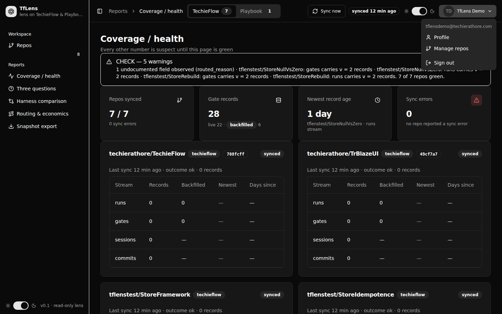
What it is for. The collapsible icon sidebar, the header (breadcrumb, Framework switch, Sync now, theme toggle, user menu) and the page container that every authenticated screen renders inside.
Control → data path#
| Region | Component | data-testid | Service call | Behind it |
|---|---|---|---|---|
| Sidebar shell | SidebarProvider CookieKey="@SidebarPreference.CookieName" → Sidebar | app-sidebar | — | tflens-sidebar cookie, written by TrBlazeUI |
| Nav items | SidebarMenuButton ×7 | nav-repos, nav-coverage, nav-three-questions, nav-harness, nav-routing, nav-misses, nav-export | — | ShellNavigation.Items (order, label, Lucide name, section, HasFrameworkSwitch all live here). /misses was added 2026-08-28 between Routing and Snapshot export, icon bug |
| Repo badge | SidebarMenuBadge | nav-repo-count | ShellState.RepoCount | IRepoRegistry.ListAsync(userId) → SELECT * FROM "UserRepo" WHERE "UserId" = @aUserId |
| Sidebar theme toggle | ThemeToggle | theme-toggle-sidebar | ShellPreferences.SetThemeAsync | JS tflens.setTheme → tflens-theme cookie + <html class="dark"> |
| Breadcrumb | Breadcrumb in ShellHeader.razor | — | ShellNavigation.Breadcrumb(path) | static table; /profile comes from ExtraCrumbs |
| Framework switch | FrameworkSwitch.razor (Tabs as segmented control) | framework-switch, framework-count-techieflow, framework-count-playbook | ShellPreferences.SetFrameworkAsync + ShellState.RepoCountFor(fw) | tflens-framework cookie; raises Changed, which every report page answers by re-querying |
| Sync now | SyncNowButton.razor | sync-now | IRepoSyncRunner.SyncAsync(userId) | RepoSyncRunner → GitHub GET → PostgresStore.UpsertAsync → WriteSyncStateAsync |
| Last-sync badge | Badge | last-sync-badge | RelativeTime.SyncBadge(ShellState.LastSyncUtc, now) | max LastSyncTs over "SyncState" rows with no LastError |
| Theme toggle | ThemeToggle | theme-toggle | as above | — |
| User menu | UserMenu.razor (DropdownMenu) | user-menu, user-menu-name, user-menu-email, user-menu-profile, user-menu-repos, user-menu-signout | claims via ShellIdentity | cascading AuthenticationState |
| Toasts | ToastProvider Position="BottomRight" | — | ToastService | — |
ShellHeader.ShowsFrameworkSwitch → ShellNavigation.ShowsFrameworkSwitch(path) → the item's
HasFrameworkSwitch flag. It is true on the six report routes only (/, /three-questions,
/harness, /routing, /misses, /export) — not on /repos, not on /profile. Verified live;
/misses observed carrying framework-switch on 2026-08-28.
States#
- Loading —
MainLayout.OnParametersSetAsyncawaits the cascadingAuthenticationState, thenShellState.EnsureLoadedAsync(userId). Until it returns,RepoCountis 0 and the badge shows0. - Empty —
ShellState.Repos = []. There is no distinct empty rendering;IsLoadedexists so a consumer can tell "no repos" from "not read yet", but the shell does not use it. - Error —
ShellState.RefreshAsyncswallows the exception intoLoadError, sets both lists empty and still raisesChanged.LoadErroris never rendered anywhere. A store outage looks exactly like an empty workspace in the shell. - Unauthenticated — the fallback authorization policy (
AuthRegistration.cs:92) redirects to/loginbefore the layout renders.
Gotchas#
- The repo badge is not framework-filtered. It is
ShellState.RepoCount(all repos, both axes), while the Framework-switch badges areRepoCountFor(fw)and Coverage counts only the selected axis. Live today: sidebar8, switchTechieFlow 7/Playbook 1, Coverage "7 repos". All three are correct and all three differ. Do not "fix" one to match another without deciding which question the badge is answering. - Rendering defect:
SidebarMenuBadgeis a sibling ofSidebarMenuButtoninsideSidebarMenuItemand currently renders on the line below the Repos link rather than inline on the row. Visible in every screenshot. ShellStateresolvesIRepoRegistry/ITelemetryStorelazily throughIServiceProvider, not by constructor injection, so a missing registration degrades to an empty workspace instead of a startup failure. That also means a typo'd registration will never throw — it will just show0.- Every subscriber (
MainLayout,Coverage,Repos,Harness,ThemeToggle,FrameworkSwitch,SyncNowButton) implementsIDisposableand unsubscribes fromShellState.Changed/ShellPreferences.Changed. Add a subscription without a matchingDisposeand you leak a handler per navigation. /signoutis broken. See/profile— it belongs to the user menu but the bug lives inProgram.cs/AuthEndpoints.cs.
/login#
File: src/TfLens/Components/Pages/Auth/Login.razor · @page "/login" ·
@layout AuthLayout · @attribute [AllowAnonymous] · @rendermode InteractiveServer
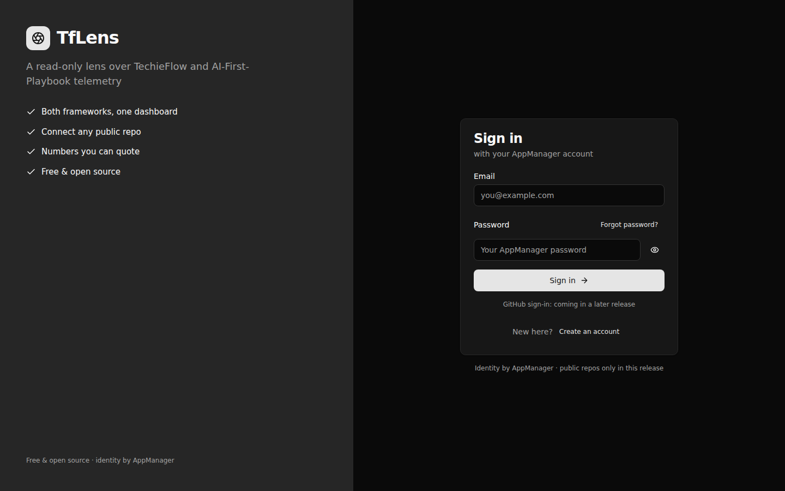
What it is for. Sign in with an AppManager account. The credentials are checked from the circuit so a failure keeps what the user typed and costs no page load; a success then posts the same form for real, because only a genuine HTTP response can carry the auth cookie.
Control → data path#
| Control | Component | data-testid | Method | Behind it |
|---|---|---|---|---|
| Brand panel | AuthLayout.razor aside.auth-brand | auth-brand-panel | — | four hard-coded Benefits strings |
Field → Input Type=Email | login-email | @bind-Value="objEmail" | — | |
| Password | Input Type=@PasswordInputType | login-pass | @bind-Value="objPassword" | — |
| Eye toggle | Button Variant=Ghost Size=IconSmall | login-pass-toggle | TogglePasswordVisibility() | flips InputType.Text/Password; icons eye / eye-off |
| Submit | Button Type=Submit | login-submit | OnSubmitAsync() | IAppManagerClient.LoginAsync(email, pw) → POST /AuthSvc/login, password RSA-OAEP-256 encrypted first |
| Real POST | AuthForms.razor (renders nothing) | — | objForms.SubmitAsync(FormId) | JS module AuthForms.razor.js → native form.submit() to POST /auth/login |
| Cookie issue | — | — | AuthEndpoints.LoginAsync | AuthService.SignInAsync → IAuthSessionStore.CreateAsync ("AuthSession", tokens Data-Protection-encrypted) → cookie TfLensAuth carrying only the session id + display claims |
| Error | Alert Variant=Danger | login-error | ApplyFailure(isLocked) | two strings only |
| Reset confirmation | Alert Variant=Success | login-reset-done | ?reset=1 query | set by /auth/reset-password |
| Links | Button Variant=Link | login-register-link | — | /forgot-password, /register |
The two-phase submit is the thing to understand. OnSubmitAsync calls
objForms.ReadAsync(FormId) first (SyncFromBrowserAsync) so the rules are judged against what the
browser would actually post rather than a stale binding, then calls LoginAsync from the circuit. Only
on success does it hand the same form to SubmitAsync, and the spinner stays up until the browser
navigates. AuthEndpoints.LoginAsync re-validates the antiforgery token and calls AppManager a second
time — the round trip is deliberate, not redundant.
Landing route (AuthEndpoints.LandingUrlAsync): the local returnUrl if present, else /repos
when ReadUserReposAsync returns nothing, else /.
States#
- Loading —
objIsSubmittingdisables the button and swaps in<Spinner>+ "Signing in…". - Error — exactly two messages ever render.
GenericFailure("Sign-in failed. Check your email and password.") for everything, andLockedMessage("Account locked — try again later") only forAppManagerException.Codes.AccountLocked(AppManager's 423). The AppManager code is logged and never reaches the browser — that is BRD-90, anti-enumeration, not a UX choice. - Fallback path — if JS interop is unavailable the endpoint redirects back with
?error=invalidor?error=locked, whichOnParametersSetturns into the same two messages.
Gotchas#
AuthFormsrenders nothing. IfobjFormsis null (prerender, disconnected circuit) a successful credential check produces no cookie; the code logs"Sign-in succeeded but the form helper was unavailable"and shows the generic failure. A user who "signed in successfully but stayed on the login page" is this branch.- Don't
waitForLoadState('networkidle')after clicking submit — see How to run and drive it. LocalReturnUrlrejects anything that is not a single-slash-rooted path (//evil.example,/\evil.example) rather than sanitising it. Do not relax that.
Deviation from docs/TfLens-UIDesign.md#
The design map specifies TypographyH2 for the brand wordmark; AuthLayout.razor uses a plain
<span class="auth-wordmark">. Cosmetic, and the layout also supplies the --sidebar / --alert-*
design tokens TrBlazeUI 2.0.0 references but never defines (TR-001) — custom properties inherit, so
every control below picks them up. Do not delete .auth-split styling assuming it is decoration.
Known issues (UAT 2026-08-28) — REQ-UI-001 — FIXED 2026-08-28#
The whole screen collapses ifFixed 2026-08-28. TheTfLens.styles.cssdoes not load..auth-*rules now live insrc/TfLens/wwwroot/app.css, served straight from the web root, andAuthLayout.razor.cssis deleted — so the anonymous layout no longer depends on the scoped bundle at all.tests/verify/asset-integrity.spec.tsserves/loginwith that bundle 404'd and asserts the split, the card width and the bullet rows survive. Do not move these rules back into a co-located.razor.css. What follows is the original diagnosis, kept because the shape of the failure is worth recognising. Every rule that laid this page out lived inAuthLayout.razor.css, i.e. in the Blazor scoped-CSS bundle.trblazeui.cssandapp.cssare not enough: with them alone you get styled inputs and a dark theme laid out as one full-width column starting at x=0, which is exactly what the owner reported (docs/uatissuessc/Login.png). Reproduced pixel-for-pixel by serving/loginwith only that bundle 404'd. There is no console error and no server log line — the page just looks wrong. When triaging any "the page looks unstyled" report, checkcurl -o /dev/null -w '%{http_code}' <base>/TfLens.styles.cssfirst — or just runnpx playwright test tests/verify/asset-integrity.spec.ts, which now checks every declared stylesheet and script on/loginand on the authenticated shell (REQ-NFR-015).- Related repo hazard:
bin/andobj/are tracked in git, andbin/Debug/net10.0/TfLens.staticwebassets.runtime.jsoncarries machine-absolute content roots (/mnt/c/…after a WSL build,C:\1MyCode\…after a Windows build). SeeREQ-NFR-016.
/register#
File: src/TfLens/Components/Pages/Auth/Register.razor · @page "/register" · AuthLayout ·
[AllowAnonymous] · InteractiveServer
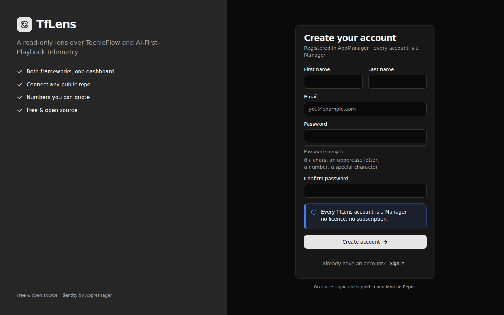
What it is for. Create an AppManager account. Every account is a Manager; there is no other role and no licence.
Control → data path#
| Control | Component | data-testid | Method | Behind it |
|---|---|---|---|---|
| First / last name | Input in trblazeui-col-6 | reg-first, reg-last | binds | — |
Input Type=Email | reg-email / error reg-email-error | binds | — | |
| Password | Input Type=Password | reg-pass / reg-pass-error | binds | — |
| Strength meter | PasswordStrengthMeter.razor | password-strength | PasswordRules score | local Progress shim |
| Confirm | Input Type=Password | reg-confirm / reg-confirm-error | binds | — |
| Manager note | Alert Variant=Info AccentBorder | reg-manager-note | — | always rendered, never conditional |
| Submit | Button Type=Submit | reg-submit | OnSubmitAsync() | local rules → objForms.SubmitAsync → POST /auth/register |
| Account creation | — | — | AuthEndpoints.RegisterAsync | AuthService.RegisterAsync → IAppManagerClient.RegisterAsync with applicationRoleCode: "Manager", then issues the same session a sign-in would |
| Form error | Alert Variant=Danger | reg-error | — | GenericFailure |
Rules run locally first. PasswordRules.Describe(objPassword)
(src/TfLens.Core/AppManager/PasswordRules.cs) applies every rule AppManager would apply, so a
predictable violation never reaches the API or its log. Confirm mismatch is checked here too. Only a
clean form is posted.
States#
- Loading —
objIsSubmitting→ spinner + "Creating account…". - Field errors —
reg-email-error("already registered"),reg-pass-error(rule text),reg-confirm-error("passwords differ").Field IsInvaliddrives the red styling. - Server refusal —
AuthEndpointsredirects back with?error=duplicate|weak|<other>;OnParametersSetmaps those onto the same three targets, never onto a raw AppManager code.
Gotchas#
- Unlike
/login, this page does not call AppManager from the circuit. It validates locally and posts straight through, so every server-side refusal costs a page load and arrives as a query parameter. Do not "optimise" this into a circuit call without also solving the cookie problem. OnParametersSetbails out early ifobjEmailErrororobjFormErroris already set, so a query-string error never overwrites a local one on the same render.
Deviation from docs/TfLens-UIDesign.md#
§Library gaps says password strength must use TrBlazeUI's PasswordStrength control
(Components/PasswordStrength/). It does not exist in the installed TrBlazeUI.Components 2.0.0 (TR-003),
so PasswordStrengthMeter.razor composes the documented shape from the library's own Progress — which
is the fallback the same section names. Delete the shim the moment the library ships the real one.
/forgot-password#
File: src/TfLens/Components/Pages/Auth/ForgotPassword.razor · @page "/forgot-password" ·
AuthLayout · [AllowAnonymous] · InteractiveServer
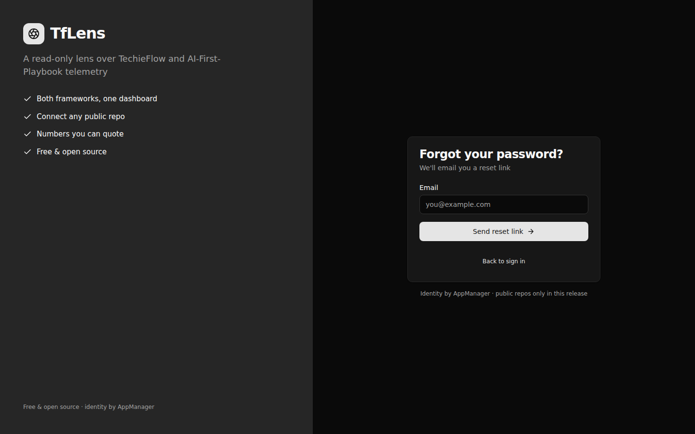
What it is for. Ask AppManager to email a reset link. It has exactly one outcome.
Control → data path#
| Control | Component | data-testid | Method | Behind it |
|---|---|---|---|---|
Input Type=Email | forgot-email | binds | — | |
| Submit | Button Type=Submit | forgot-submit | OnSubmitAsync() | IAppManagerClient.ForgotPasswordAsync(email) → POST /AuthSvc/forgot-password |
| Success | Alert Variant=Success replacing the form | forgot-sent | objIsSent = true | — |
| Back link | Button Variant=Link | forgot-back | — | /login |
States#
Loading (spinner + "Sending…"), then success — always. IsSent is objIsSent || SentOutcome == "1",
where the query parameter covers the non-interactive POST /auth/forgot-password path.
There is no error state. OnSubmitAsync wraps the call in try/catch, logs a warning and swallows
it. That is deliberate: surfacing a failure would tell the caller something about the address, which is
the exact leak BRD-92 forbids.
Gotchas#
- If reset emails stop arriving, this page will still say "Check your inbox". Diagnose from the server log (
logs/tflens-*.log,"Forgot-password request could not be delivered to AppManager"), never from the screen. Do not add a visible error path. - Nothing on this page branches on whether the address exists — no wording, no layout, no code path.
/reset-password#
File: src/TfLens/Components/Pages/Auth/ResetPassword.razor · @page "/reset-password" ·
AuthLayout · [AllowAnonymous] · InteractiveServer
Form state (?token=…) | Dead-link state (no token) |
|---|---|
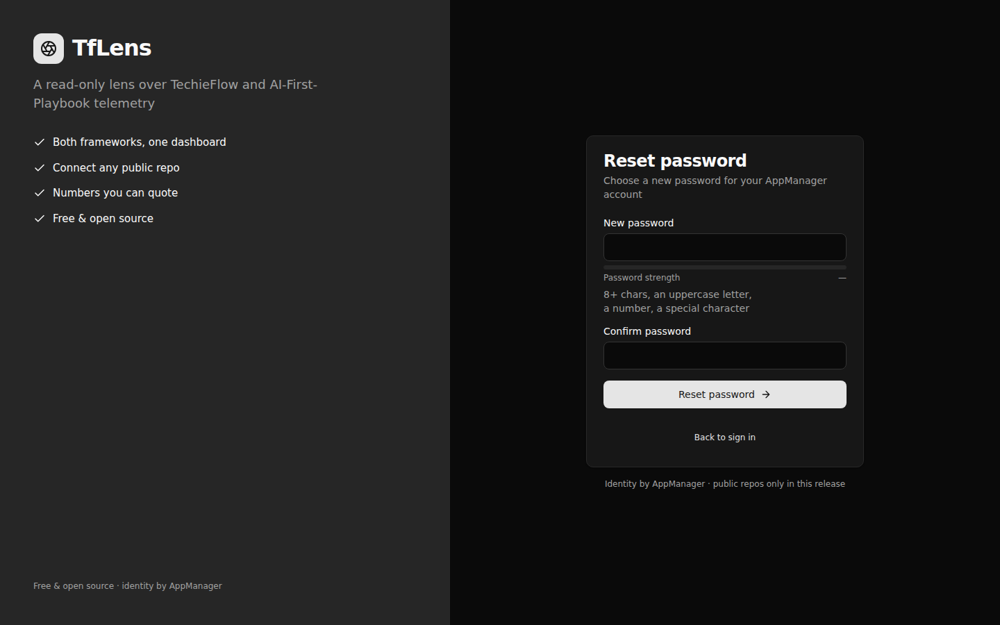 | 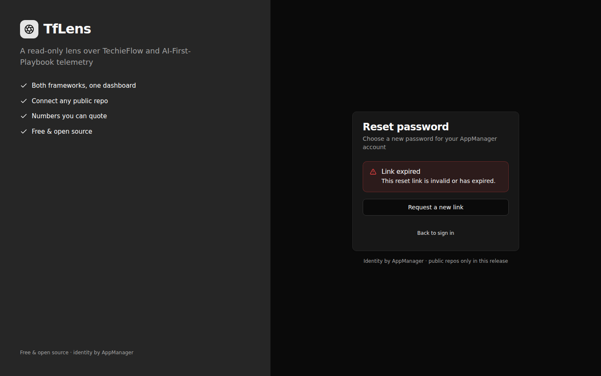 |
What it is for. Complete a password reset against the token from the emailed link.
Control → data path#
| Control | Component | data-testid | Method | Behind it |
|---|---|---|---|---|
| New password | Input Type=Password + PasswordStrengthMeter | reset-pass / reset-pass-error | binds | PasswordRules.Describe |
| Confirm | Input Type=Password | reset-confirm / reset-confirm-error | binds | — |
| Submit | Button Type=Submit | reset-submit | OnSubmitAsync() | IAppManagerClient.ResetPasswordAsync(token, newPassword) |
| Success | Alert Variant=Success + Button | reset-done, reset-signin | objIsDone = true | replaces the form |
| Dead link | Alert Variant=Danger + Button Variant=Outline | reset-invalid, reset-request-new | objIsLinkDead = true | replaces the form |
| Form error | Alert Variant=Danger | reset-error | — | GenericFailure |
States#
Three mutually exclusive card bodies, in this precedence: objIsDone → success · objIsLinkDead →
dead link · otherwise the form.
objIsLinkDead is set by:
OnParametersSetwhenTokenis null/whitespace (verified: bare/reset-passwordrenders "Link expired" immediately, no request made);?error=expiredfrom the endpoint;AppManagerException.Codes.InvalidResetTokenorAppIdMismatch.
Those last two deliberately collapse onto one sentence, so a wrong-tenant link is indistinguishable from a stale one.
Gotchas#
- The token is never rendered. Not in a value, not in a hidden input, not in a message. It lives in a private
[SupplyParameterFromQuery]field only. Do not add it to adata-testid, a log line, or a hidden field "for debugging". InvalidLinkMessageis one constant used by every dead-link path. If you split it into per-cause wording you have reintroduced the tenant-enumeration leak.
/profile#
File: src/TfLens/Components/Pages/Auth/Profile.razor · @page "/profile" ·
@attribute [Authorize] · InteractiveServer · MainLayout (breadcrumb Account › Profile, from
ShellNavigation.ExtraCrumbs; no sidebar item)
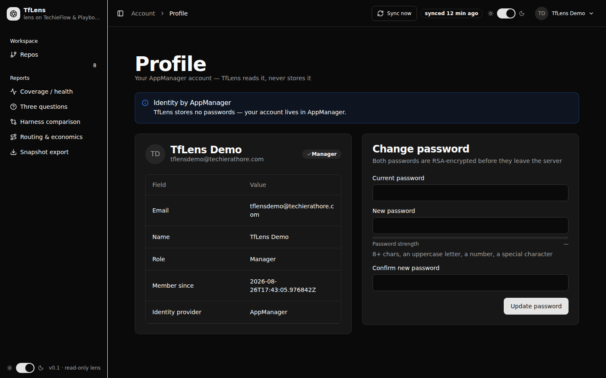
What it is for. Show the AppManager account TfLens reads but never stores, and change its password.
Control → data path#
| Region | Component | data-testid | Method | Behind it |
|---|---|---|---|---|
| Identity note | Alert Variant=Info | profile-identity-note | — | always |
| Avatar / name / email | Avatar + CardTitle + CardDescription | profile-name, profile-email | AuthService.GetProfileAsync() | IAppManagerClient.GetProfileAsync(accessToken) → GET /UserSvc/profile |
| Role badge | Badge Variant=Secondary | profile-role-badge | const ManagerRole = "Manager" | a constant, not a field — there is no other role |
| Values table | DataTable TData=ProfileRow | profile-values | BuildRows() | Email · Name · Role · Member since · Identity provider |
| Current password | Input Type=Password | pw-current / pw-current-error | binds | — |
| New password | Input Type=Password + PasswordStrengthMeter | pw-new / pw-new-error | binds | PasswordRules.Describe |
| Confirm | Input Type=Password | pw-confirm / pw-confirm-error | binds | — |
| Update | Button Type=Submit | pw-submit | OnChangePasswordAsync() | AuthService.ChangePasswordAsync → POST /UserSvc/change-password, both passwords RSA-encrypted server-side |
| Sign out | UserMenu.razor (shell) | user-menu-signout | NavigateTo("/signout", forceLoad: true) | see the bug below |
DisplayName / Email fall back to CurrentUser when AppManager has not answered, so the header of
the card is populated from claims even when the body shows the failure alert.
States#
- Loading —
objIsLoadingrendersSkeletoncircles/lines in the header andprofile-skeletonin the body. Set false inOnInitializedAsyncregardless of outcome. - Error —
objLoadFailed(i.e.objProfile is null) rendersAlert Variant=Warningprofile-unavailable— "AppManager did not answer. Reload the page to try again." The exception is logged as a warning, never shown. - Password success — fields cleared +
ToastService.Success. - Password failure —
InvalidCurrentPassword→pw-current-error; anything else →pw-new-errorwith the rules text; a non-AppManagerException→ToastService.Error.
Gotchas#
- The
profile-valuestable is one row from silent truncation. It is the onlyDataTablein the app with noInitialPageSize,BuildRows()returns exactly 5, and the default page size is 5. Add a sixth field and it vanishes with no error. SetInitialPageSize="16"when you touch this file. /signoutreturns 404 and does not sign the user out.UserMenu.OnSignOutnavigates to/signoutwithforceLoad: true, andProgram.cs:88setsaCookie.LogoutPath = "/signout"— butAuthEndpoints.MapAuthEndpointsonly mapsPOST /auth/logout. There is noGET /signouthandler anywhere. Verified live:GET /signout→ 404, and theTfLensAuthcookie is still present afterwards./signoutis also absent fromAnonymousRoutes.Paths. This is the only sign-out control in the app, so sign-out is currently non-functional. (Reported, not fixed — this is a docs task.)AuthService.SignOutAsyncitself is correct: it calls AppManager's authenticatedPOST /AuthSvc/logoutwith the bearer token (a call without it is answered 401 and revokes nothing), then deletes the session row and clears the cookie regardless of AppManager's answer (BRD-4). Only the route into it is missing.
/repos#
Files: src/TfLens/Components/Pages/Repos.razor (+ .razor.js, .razor.css) · @page "/repos" ·
authenticated · MainLayout · breadcrumb Workspace › Repos · no Framework switch
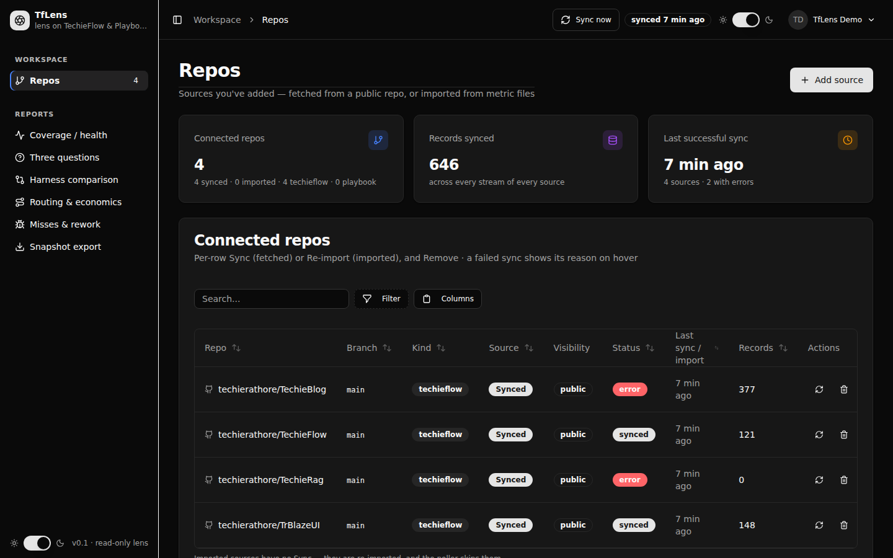
What it is for. The only screen that writes. Add a source, sync one, re-import one, remove one.
Changed 2026-08-28 (F-IMPORT). There are now two ways a source gets into TfLens, and the page forks on that from the first press to the last column:
| Fetch via API | Import metric files | |
|---|---|---|
| How data arrives | TfLens fetches from a public GitHub repo | the user uploads the metric files |
Stored SourceKind | api | import |
| Source badge | Synced | Imported |
| Dataset identity | "SyncState"."LastSha" (commit SHA) | "UserRepo"."BundleSha" (sha256 of the bundle) |
| Row action | Sync (repo-sync-{name}) | Re-import (repo-reimport-{name}) |
| Poller visits it | yes | never — ImportedSourceRules.CanSync is false |
| Dialog flow | validate, then Connect | preview, then Import |
The two are one Dialog with two panels, not two dialogs. Origin is delivery, not data: it is
displayed here, on Coverage and in the export, and it divides no figure anywhere (ADR-021, and
SourceKindIsNeverASegmentTests pins it). See
cross-cutting gotcha 13 before
you touch either vocabulary.
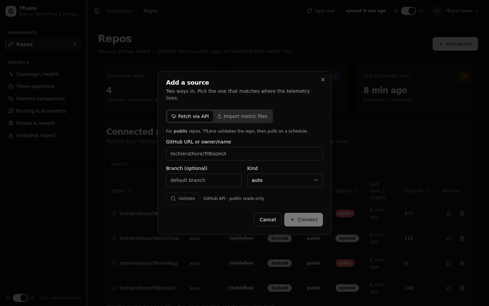
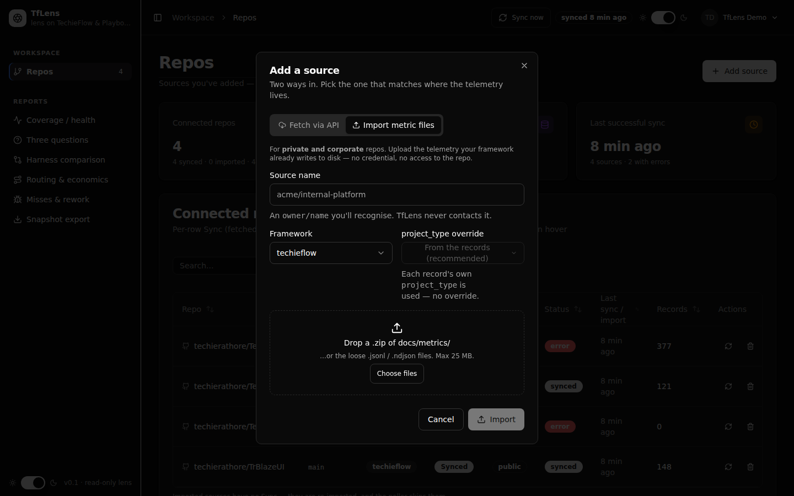
Injected services#
@inject IRepoListReader objRepoListReader // == RepoRegistry (ReposRegistration.cs:46)
@inject RepoRegistry objRepoRegistry // the CONCRETE class, not IRepoRegistry
@inject IServiceProvider objServices // IRepoSyncRunner resolved lazily
@inject ShellState objShellState
@inject ToastService objToastServiceRepoRegistry implements both IRepoRegistry and IRepoListReader, and both interfaces are registered
as the same scoped instance. The page injects the concrete type because it needs the four-argument
ValidateAsync/ConnectAsync overloads that take a kind override — IRepoRegistry only declares the
three-argument ones.
Control → data path#
| Control | Component | data-testid | Method | Behind it |
|---|---|---|---|---|
| Add source | Button | connect-repo | OpenAddSourceDialog(SourceKinds.Api) | resets both panels' state, opens on the API mode |
| KPI: connected | StatTile | kpi-repos | objRows.Count | RepoRegistry.ListWithCountsAsync(userId); the sub-line splits n synced · n imported · n techieflow · n playbook |
| KPI: records | StatTile | kpi-records | objRows.Sum(r => r.RecordCount) | "SyncState" counters — see gotcha 6 |
| KPI: last sync | StatTile | kpi-last-sync | RelativeTime.Describe(ShellState.LastSyncUtc, now) | max LastSyncTs with no error |
| Grid | DataTable TData=RepoListItem ShowToolbar ShowPagination InitialPageSize="10" | repos-table | ListWithCountsAsync | joins "UserRepo" to "SyncState" per user |
| Repo cell | <a> or plain span | — | ImportedSourceRules.IsImported | a fetched row links to github.com/{repo} with a github icon; an imported row is not a link and carries hard-drive — there is no GitHub page to open |
| Source cell | Badge | repo-source-{name} | SourceKinds.DisplayName(row.Repo.SourceKind) | never a literal — gotcha 13 |
| Status cell | Badge / Tooltip | repo-status-{name} | RepoListItem.Status | pending when Sync is null, error when LastError is not null, else synced; the tooltip carries the redacted LastError (SyncErrorRedactor) |
| Last sync / import | <span> | — | LastActivityText(row) | one column, two meanings — LastSyncTs for a fetched source, LastImportTs for an imported one |
| Row sync | Button Variant=Ghost Size=IconSmall | repo-sync-{name} | SyncRepoAsync(row) | rendered only when ImportedSourceRules.CanSync(kind) → IRepoSyncRunner.SyncRepoAsync(userId, repo) |
| Row re-import | Button Variant=Ghost Size=IconSmall | repo-reimport-{name} | OpenReimportDialog(row) | opens the same dialog straight onto the import panel, name and framework pre-filled and locked |
| Row remove | Button Variant=Ghost Size=IconSmall | repo-remove-{name} | OpenRemoveDialog(row) | identical for both source kinds |
| Source note | <p> | repos-source-note | — | "Imported sources have no Sync — they are re-imported, and the poller skips them." |
| Mode fork | Tabs → TabsTrigger ×2 | source-mode, source-mode-api, source-mode-import | OnSourceModeChangedAsync | switching modes calls ForgetBundleAsync() + ResetPreview() — a staged bundle never survives a mode change |
| — Fetch via API panel | <div> | source-panel-api | ||
| Connect input | Input | connect-input | binds | RepoInputParser accepts a URL or owner/name |
| Branch | Input | connect-branch | binds | null → default branch |
| Kind | Select | connect-kind | binds | auto / techieflow / playbook |
| Validate | Button Variant=Outline | connect-validate | ValidateAsync() | RepoRegistry.ValidateAsync → IGitHubStreamFetcher.GetRepoAsync + PathExistsAsync |
| Validation lines | CheckLine.razor ×3 | connect-validation | RepoValidation.Exists/IsPublic/TelemetryPath | — |
| Private-repo exit | Alert Warning + Button | connect-private, connect-switch-import | SwitchToImportModeAsync() | new — carries objConnectInput across into objImportName instead of dead-ending (BRD-100) |
| Connect | Button | connect-submit | ConnectAsync() | RepoRegistry.ConnectAsync (re-validates server-side) → WriteUserRepoAsync → queued first sync |
| — Import metric files panel | <div> | source-panel-import | ||
| Source name | Input | import-name | binds objImportName | RepoInputParser again — an imported source still has an owner/name; disabled on a re-import |
| Framework | Select | import-framework | binds | drives the expected path hint (docs/metrics/ vs verification/telemetry/) |
| Project type | Select | import-project-type | — | disabled by design: the import service takes no override, so the records keep the type they were written with |
| Drop zone | div.tflens-drop + <input type=file> | import-drop, import-choose, import-chosen | Repos.razor.js watchImport / openFilePicker | capture-phase dragover/drop on document, because the zone lives inside a portalled dialog Blazor re-renders |
| Previewing | Spinner + text | import-previewing | OnBundleSelectedAsync [JSInvokable] | posts to POST /api/import/preview |
| Refusal | Alert Danger | import-refusal | ImportResponse.Reason → RefusalTitle | one of eight ImportRefusalReason values, message rendered verbatim |
| Preview card | Card + DataTable InitialPageSize | import-preview, import-preview-streams, import-preview-summary, import-bundle-sha | objImportPreview | per stream: records · date range · invalid lines; the badge is BundleSha[..8] |
| Framework mismatch | Alert Warning | import-framework-mismatch | FrameworkMismatch(response.Framework) | the bundle's own streams disagree with the chosen framework |
| Import | Button | import-submit | ImportAsync() | enabled only on CanImport; label reads "Import {n} records" — it states what pressing it writes |
| Import progress | Progress | import-progress | objImportPhase / objImportProgress | 30 → 80 → 100, a three-step estimate, not a measurement |
| Cancel | Button Variant=Outline | add-source-cancel | CloseAddSourceDialogAsync() | also calls ForgetBundleAsync() — closing the dialog drops the staged bytes |
| Remove confirm | AlertDialog | remove-title, remove-description, remove-cancel, remove-confirm | ConfirmRemoveAsync() | RepoRegistry.RemoveAsync → ITelemetryStore.DeleteRepoDataAsync + raw archive under data/raw/ |
| Empty | Empty | repos-empty, repos-empty-connect, repos-empty-import | — | the empty state offers both modes |
The import data path#
The bytes never enter the circuit. Repos.razor.js posts them straight to a minimal-API endpoint
and only the file names and the total size cross into Blazor:
Repos.razor.js postBundle(route, source) // multipart/form-data, credentials: same-origin
│ // buildStoredZip() bundles loose files client-side
│ // __RequestVerificationToken lifted from the page
▼
POST /api/import/preview · POST /api/import/commit (Services/Import/ImportEndpoints.cs)
│ .RequireAuthorization() + IAntiforgery.ValidateRequestAsync — both, on both routes
▼
TfLens.Core.Import.TelemetryImportService
├─ UploadBounds — extension ∈ {.zip,.jsonl,.ndjson}; ≤ 25 MB; TryConfine() proves every
│ written path resolves inside data/raw/<userId>/
├─ SafeZipReader — ≤ 512 entries, ≤ 100 MB expanded, ≤ 50 MB per entry; refuses absolute
│ paths, `..` segments and symlinks
├─ RollupDetector — refuses a *computed* file (a rollup/snapshot) rather than raw records
└─ then the SAME pipeline the fetcher uses:
StreamParser → Dedupe → ITelemetryStore.UpsertAsyncThree things about that pipeline are the point of the design:
- Preview writes nothing at all.
PreviewAsyncruns every gate and parses, then throws the result away;CommitAsyncis the only press that writes. The preview's source name is the sentinelTelemetryImportService.PreviewRepo("(preview)"). - An imported record is indistinguishable from a fetched one once it is stored. Same parser, same dedupe, same
UpsertAsync, same tables. There is noSourceKindcolumn on any stream table. - The bytes land in the raw archive before anything parses them (
data/raw/<userId>/<owner>/<name>/{stream}-{bundleSha}.jsonl), so a parser exception after that point still leaves an archive that Coverage's Rebuild can replay.
CommitAsync then calls StampSourceRowAsync, which is where the source becomes real:
- it creates the
"UserRepo"row if there isn't one — an import is how a private or corporate repository becomes a source at all (BRD-131), so it cannot require a prior connect that could never succeed. The created row isSourceKind = import,IsPublic = false,BundleSha,LastImportTs. - it writes the
"SyncState"counts — read back from the stored rows, not added up from what the bundle presented, so re-importing an identical bundle (which legitimately adds zero records) still leaves the row showing its true totals. - it clears
LastShain the same write. The XOR of REQ-FN-084 spans two tables:BundleShaon"UserRepo",LastShaon"SyncState". A source connected by API and later imported would otherwise carry two answers to "which bytes produced these figures", which is exactly the ambiguity a parity run exists to remove.ImportedSourceRules.AssertSingleDatasetIdentityasserts it at the end of the write.
Every refusal is structural and none has an override (REQ-NFR-014, REQ-FN-086) — the eight values
of ImportRefusalReason are UnsupportedExtension, TooLarge, UnsafeArchive, PrecomputedRollup,
Empty, NothingRecognised, MixedFrameworks and None. PrecomputedRollup is the interesting
one: a file of computed figures is refused by name and by payload shape (RollupDetector), because
importing somebody's rollup would let a number into TfLens that no record supports.
DeleteRepoDataAsync removes all three layers, scoped to (userId, repo): every stream table row
("Run", "Gate", "Session", "Commit", "PbEvent"), the "SyncState" row, and the "UserRepo"
row itself. RepoRegistry.RemoveAsync then removes the raw archive, which the store never touches.
Another user's copy of the same public repository is untouched.
Connect is enabled only on RepoValidation.IsConnectable — Exists && IsPublic && TelemetryPath is
not null && !AlreadyConnected.
States#
- Loading —
objIsLoaded == falserenders aCardof threeSkeletonlines. - Empty —
objRows.Count == 0→Emptyrepos-empty. - Row syncing —
objSyncingRepos(aHashSet<string>) swaps the status cell and the row button for aSpinner. - Connect progress —
connect-progresswith aProgressbar;ConnectAsyncsets 15 → 55, thenWaitForFirstSyncAsyncpollsListWithCountsAsynconce a second for up to 30 seconds, walking the bar to 95, untilStatus != Pending. - Rate limit —
GitHubRateLimitException→Alert Variant=Warningconnect-rate-limit, on both Validate and Connect. Checked before the private/problem alerts, so a rate limit never masquerades as a validation failure. - Private repo —
Alert Variant=Warningconnect-privatewithRepoRegistry.PrivateRepoMessage, and an inline exit:connect-switch-importmoves the typedowner/nameinto the import panel. This is the one refusal on the page that now offers a way forward instead of dead-ending. - Other refusal —
Alertconnect-problem,WarningwhenAlreadyConnected, elseDanger. - Import: nothing staged — the drop zone alone;
import-submitis disabled (CanImportrequires a preview and a name). - Import: previewing —
import-previewing, spinner; the file picker and drop are disabled. - Import: refused —
import-refusal, anAlert Dangerwhose title comes from theImportRefusalReasonand whose body is the service's message verbatim. No preview is shown. - Import: previewed —
import-previewwith the per-stream table, the summary lines and theimport-bundle-shabadge. Nothing has been written yet. - Import: committing —
import-progress, phase text plus aProgress. On success the dialog closes and a toast reads "Imported" / "Re-imported" with records added and duplicates collapsed. - Re-import — the same dialog with
objIsReimport = true: the title reads "Re-import a source", the mode tabs are not rendered, andimport-nameis disabled.
Observed 2026-08-28#
Signed in as userId 2 at 1440×900. 40 data-testids on the page, repos-table with 4 rows, 0
blank icons, no page-level horizontal scroll, no console or page errors.
- All four rows are
Synced(repo-source-{name}× 4), so the Imported badge and therepo-reimport-{name}action are documented from the code, not from a live row — this workspace has no imported source. KPI sub-line read4 synced · 0 imported · 4 techieflow · 0 playbook. - Column order as rendered: Repo · Branch · Kind · Source · Visibility · Status · Last sync / import · Records · Actions.
repos-source-noterendered.- Add-source dialog opened:
source-mode,source-mode-api,source-mode-import,source-panel-api,connect-input,connect-branch,connect-kind,connect-validate,add-source-cancel,connect-submit. - Clicking
source-mode-importswapped the panel:source-panel-import,import-name,import-framework,import-project-type,import-drop,import-choose,add-source-cancel,import-submit. The API panel's controls left the DOM entirely — the two panels are@if-forked, not hidden. - Not exercised in this pass: an actual upload, the preview table, and any refusal path. Those are documented from
TelemetryImportService/ImportEndpoints, not observed.
Known issues (runtime-observed 2026-08-27)#
The remove-repoFixed 2026-08-27 (REQ-UI-013, nowAlertDialogignores Escape.Verified). Escape dismisses the dialog and leaves every row in place; Cancel and the confirm path are unchanged. Pinned bytests/verify/ui-auth-shell.spec.ts, which Escapes twice in one test so a listener torn down after the first press fails the assertion.The connect-repoFixed 2026-08-27 by the sameDialogstops honouring Escape once a validation result is on screen.Repos.razor.jshandler — the REQ-UI-012 spec's branch log flipped fromfalsetotrue. Both dialogs share one root cause:TR-014, TrBlazeUI's missing Escape support. If TrBlazeUI ever shipsCloseOnEscape, this module is what to delete.- The
Actionscolumn renders no text by design — the row Sync and Remove controls are icon-only buttons. A cell-level "is it blank?" check will report one blank cell per row onrepos-table; that is the Actions column, not a data defect. - The demo account carries five
tflenstest/Store*rows that are not real GitHub repos, left behind by a build-phase store harness. They surface here and on Coverage as repos whose sync fails, and they inflateConnected reposto 8. They are database pollution, not user data — see the checklist's*verify allfindings.
2026-08-28 — Add source and Remove are their own ROUTES now (REQ-UI-044)#
This screen is the grid only. The three write flows moved out:
| Flow | Route | Page |
|---|---|---|
| Add a source | /repos/add, /repos/add/{api|import} | Components/Pages/AddSource.razor |
| Re-import a source | /repos/reimport/{Source} | same page, re-import mode |
| Remove a source | /repos/remove/{Source} | Components/Pages/RemoveSource.razor |
{Source} is owner/name escaped once with Uri.EscapeDataString by the grid and unescaped once by
the page — the round trip is in GoToRemove / GoToReimport and the pages' Source parameter.
Why, and what it bought. They were a Dialog and an AlertDialog until the owner reported that
deleting or adding a source could leave the whole page dimmed and dead (a mounted bg-black/80
backdrop with no panel — docs/uatissuessc/Repos-delete-issue.png). Nine reproduction attempts here
could not produce that state, and a construct whose failure mode the harness cannot reproduce is one
the harness cannot sign off either. As routes there is no backdrop to strand, no portal to miss, no
body{overflow:hidden} scroll lock to leak, and no need for the page-owned Escape handler that only
existed because TrBlazeUI ships none (TR-014) — Repos.razor.js is deleted and its import half is
AddSource.razor.js. Back and Cancel are both aborts, and every flow has a URL you can paste into a
bug report. Do not move these back into a dialog — UatEscapeTests.SourceFlowsAreRoutesAndNotDialogs
and the expectNoOverlay assertions in ui-auth-shell.spec.ts will fail if you do.
Two TrBlazeUI traps cost a 500 on first render of each new page, both in the same family as TR-010:
BreadcrumbLink (TR-023) and Typography* (TR-013) throw on an unrecognised attribute rather
than ignoring it, so a data-testid on either is a runtime InvalidOperationException. Put the id on
a <span> inside. The build will not warn you.
Known issues (UAT 2026-08-28)#
The KPI stat cards ship without the mockup's trend sparkline (Fixed 2026-08-28. The Records-synced tile now plots the realREQ-UI-011).DailySeries(ReadDailySeriesAsync, the same source Coverage / Three-questions / Routing already used —StatTilesupportedSparklineall along and this page simply never passed one). Measured live: 14 points, labelledgate records per day, last 14 days — techieflow sources only. The label names the framework on purpose: the series is one framework's while the tile's headline counts both, and an unlabelled line invites the reader to treat it as the headline's trend.Connected reposandLast successful syncdeliberately get no sparkline — neither has stored history, and a line through invented points is the fabrication this product exists to prevent. CORRECTED 2026-08-29 (MISS-TfLens-20260829-21, owner mockup-parity UAT). The sentence above is half wrong, and it was wrong in the direction that matters: it claimsConnected reposhas no stored history, but every source carries a realConnectedTs, andBuildConnectedSeries(Repos.razor) plots exactly that — when each repo was actually connected, cumulative by day. That tile has had a sparkline in the shipped build all along, and it is not a fabrication. OnlyLast successful synchas genuinely no history (only the latest sync per source is stored), and only that tile goes without. The code was right; this note and the matching inline comment were the stale artefacts, and both have been corrected. Recorded because a reader trusting this page would have "fixed" working code. Also closed 2026-08-28 (and REOPENED 2026-08-29 — seeMISS-TfLens-20260829-22: the width was honoured but the placement was not. Measured at 1280x900 the input sat at x=313, y=482 — left- aligned, on its own row below the description — because the header row wasflex-wrapand the long description claimed the full width. Fixed for real on 2026-08-29 withflex-nowrapon that row plus the magnifier glyph the mockup shows and the build never had.): oneFilter repos…input, right-aligned on the card-header row at 240px (repos-filter), with the DataTable's own toolbar switched off; Kind / Source / Status badges are colour-coded throughtflens-badge-*tones (TrBlazeUI ships no info/success/warning variant — TR-016); Records is right-aligned; repo names are semibold. Cell padding was tightened to0.625remso all nine columns fit at 1440 — before that the Remove button on every row was clipped by the card edge, visible but unpressable, and no measurement caught it because the grid had been squeezed to fit and so reported no overflow. Only the screenshot showed it. The previous divergence text follows for the record: the mockup has one right-alignedFilter repos…input on the section-header row, the build has a left-alignedSearch…box plus separateFilterandColumnsbuttons on their own row. The breadcrumb axis chips (TechieFlow n/Playbook n) are absent.OWNER-REPORTED, NOT REPRODUCED: "deleting a repo disabled the whole page" and the same on Add source.Closed 2026-08-28 by removing the construct — seeREQ-UI-044above. The failure was never reproduced; the overlay it depended on no longer exists, so it cannot recur. What follows is the original diagnosis, kept because the reasoning is the transferable part. (docs/uatissuessc/Repos-delete-issue.png— thebg-black/80backdrop mounted with no dialog panel.) Driven live here across nine variants — open / Cancel / Escape / outside-click / confirmed delete (rows 4→3, page stayed interactive, 0 console errors), the full Validate→Connect add flow, and each ofTfLens.styles.css,app.css,trblazeui.css,portal.jsand the server process removed — none reproduce it. Untested variable: Edge on Windows; every run here was headless Chromium. If you can reproduce it, capture the Network tab anddocument.querySelector('.trblazeui-portal').children.lengthat the moment the page goes dead.- The checklist Remark on
REQ-UI-013still carries the superseded 2026-08-27 "Escape does not dismiss" finding. Escape does dismiss (re-confirmed live 2026-08-28); the fix note above is the current truth.
Gotchas#
WaitForFirstSyncAsyncblocks the circuit for up to 30 seconds. If the first sync overruns,ReportConnectOutcometoasts "connected — the first sync is still running" rather than an error. A connect that "hangs" is this loop.IRepoSyncRunneris resolved withGetService, notGetRequiredService. If it is not registered, the row Sync button toasts "Sync is not available in this build." instead of throwing. Same pattern inSyncNowButton.- The
Recordscolumn andkpi-recordsread"SyncState"counters. Seeded rows show0here while Coverage shows the real totals. Not a bug in this page — gotcha 6. ReloadAsyncalso callsShellState.RefreshAsync(userId), which is what keeps the sidebar badge and the header last-sync badge in step after a connect/remove. Drop that call and the shell goes stale.data-testid="repo-sync-{name}"usesUserRepo.Name(the segment after/), notowner/name. Two connected repos with the same name under different owners collide on that id. The same is true ofrepo-reimport-{name}andrepo-source-{name}.repo-sync-{name}andrepo-reimport-{name}are mutually exclusive. A row renders exactly one of them, chosen byImportedSourceRules.CanSync. A test that asserts a Sync button on every row will fail the moment a workspace holds an imported source — and a test that asserts both is asserting a state the page cannot produce.- The
Actionscolumn now renders one action button plus Remove, not always two. The "is it blank?" note above still holds: they are icon-only. - The dialog body scrolls, the dialog does not.
.tflens-dialog-bodyis load-bearing — see cross-cutting gotcha 11. Remove it and the import mode's footer goes below the fold at phone height. It also means a geometry gate can report a false overlap against the footer for a control scrolled out of view. - Closing or switching modes forgets the staged bundle (
ForgetBundleAsync→ JSclearBundle). That is deliberate: a bundle staged under Fetch via API and committed after a mode switch would be imported into a source the user was no longer looking at. If you add a third mode, call it too. - The antiforgery token is read out of the page by the JS module (
input[name="__RequestVerificationToken"]), because the post is a hand-builtfetch, not a Blazor form. Both endpoints callIAntiforgery.ValidateRequestAsyncand answer anAntiforgeryValidationExceptionas a refusal. If the token input ever stops being rendered on this page, import fails with a refusal that looks like a server problem. import-project-typeis disabled on purpose. The import service takes noproject_typeoverride; records keep the type they were written with (SCHEMA.md §0.5). Enabling the control would be an offer TfLens cannot honour.- An imported row's
IsPublicisfalseand that is not a private-repo warning. It records that the source is not reachable over the API. Nothing polls it and nothing warns about it.
/ — Coverage / health#
File: src/TfLens/Components/Pages/Coverage.razor · @page "/" · authenticated ·
MainLayout · breadcrumb Reports › Coverage / health · Framework switch shown
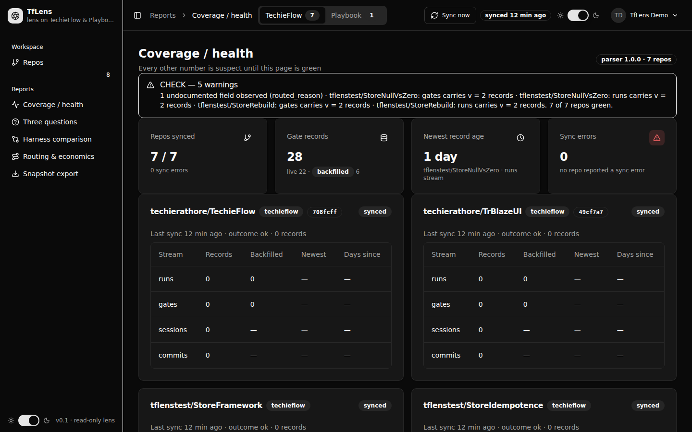
What it is for. "Every other number is suspect until this page is green." It reads the sync bookkeeping and the stored rows themselves — never a cached summary — so what it shows is what the store holds.
Control → data path#
| Region | Component | data-testid | Method | Behind it |
|---|---|---|---|---|
| Parser badge | Badge Variant=Outline | coverage-parser | ParserVersion.Current, objCards.Count | — |
| Status strip | Alert Success/Warning | coverage-status | StatusHeadline / StatusDetail ← BuildWarnings() | sync errors, stale streams, undocumented fields, v > 1 records — in that order |
| KPI: repos synced | StatTile | kpi-repos-synced | SyncedRepoCount / objCards.Count | cards whose Sync?.LastError is null |
| KPI: gate records | StatTile | kpi-gate-records | GateRecordTotal, GateRecordsLive, GateRecordsBackfilled | Σ of each card's gates stream row |
| KPI: newest age | StatTile | kpi-newest-age | NewestRecord() → AgeText | max NewestTs across all shown streams |
| KPI: sync errors | StatTile | kpi-sync-errors | SyncErrorCount, LastErrorDetail | "SyncState"."LastError" |
| Repo card | Card | repo-card-{name} | BuildCard(repo, syncStates) | one per repo on the selected framework |
| Source badge | Badge | repo-source-badge-{name} | SourceKinds.DisplayName(repo.SourceKind) | Synced / Imported; origin is shown here and pools nowhere (BRD-136) |
| SHA badge | <a> or plain <span> + Badge | repo-sha-{name} | RepoCard.ShortSha ← ImportedSourceRules.DatasetIdentity(Sync?.LastSha, Repo.BundleSha) | a fetched source shows the commit SHA and links to github.com/{repo}/commit/{sha}; an imported source shows sha256 {8 chars} of the bundle and is not a link — there is no commit to open (ADR-022) |
| Status badge | Badge | repo-state-{name} | RepoCard.StatusText | sync error / N streams stale / not synced yet / imported / synced |
| Stream table | DataTable TData=StreamRow … InitialPageSize="16" | repo-streams-{name} | BuildRow(repo, stream, isImported) | rows come from FrameworkNames.Streams(framework) — five on TechieFlow since 2026-08-28 |
| Stale badge | Badge Variant=Destructive | stale-{name}-{stream} | StreamRow.IsStale | cadence stream and DaysSince >= StalenessDays and not imported |
| Staleness alert | Alert Warning AccentBorder | repo-stale-{name} | StalenessMessage(staleStreams) | names the streams and the configured threshold; fetched sources only |
| Import-age alert | Alert Info AccentBorder | repo-import-age-{name} | ImportAgeMessage(card) | replaces the staleness alert on an imported source: "Imported {n} days ago. This source can't refresh itself — re-import to update." |
| No-fixes alert | Alert Warning AccentBorder | repo-no-fixes-{name} | objReposWithoutFixes | this repo emitted miss records and no miss-fix record |
| Reclassified alert | Alert Warning AccentBorder | repo-reclassified-{name} | DeclaredTypesFor(repo) when Count > 1 | names both project_type segments as periods of one project |
| Per-repo error | Alert Danger | repo-error-{name} | Sync.LastError | redacted at write time |
| Miss data quality | Card | miss-quality, miss-quality-total, escapes-missing-why, orphan-misses, miss-backfilled, misses-without-fixes, reclassified-summary | MissFigures.Compute(...) over this user's miss streams | counts only — there is no rate anywhere in this card |
| Unknown fields | Collapsible | unknown-fields, unknown-fields-trigger, unknown-group-{key}, unknown-fields-none | BuildUnknownFields() | field names only |
| Newer-schema alert | Alert Info | schema-version-alert | objAboveSchemaV1 | records with "V" > 1 |
| Rebuild | Card + AlertDialog | rebuild-card, rebuild, rebuild-title, rebuild-cancel, rebuild-confirm, rebuild-progress, rebuild-report, rebuild-per-stream | ConfirmRebuildAsync() | ITelemetryStore.RebuildAsync(userId) |
The SQL behind the numbers#
All of it is PostgresStore.ReadCoverageFactsAsync, three UNION ALL queries against the stream
tables (not "SyncState"):
-- StreamCoverageSql (records, backfilled, newest per repo+stream)
SELECT "Repo", 'runs' AS "Stream", COUNT(*)::int AS "Records",
COUNT(*) FILTER (WHERE "Backfilled")::int AS "Backfilled", MAX("Ts") AS "NewestTs"
FROM "Run" WHERE "UserId" = @aUserId GROUP BY "Repo"
UNION ALL … "Gate" … "Session" … "Commit" … "PbEvent""Ts"is ISO-8601 text, whose lexical order is its chronological order, soMAXis the newest record without a cast.- Only
"Run"and"Gate"carry a"Backfilled"column. The other three select a literal0, andStreamRow.BackfilledTextrenders—for them viaCarriesBackfilled— an em dash, not a zero, because the fact was never captured. - Unknown fields come from
LATERAL jsonb_object_keys("Overflow"). The store returns names only, already filtered to what SCHEMA.md does not document — anOverflowpayload must never reach a caller. - Newer-schema facts come from
MAX("V")::int … WHERE "V" > 1. - The
missesrow is one stream over three tables."Miss","MissFix"and"MissAmend"areUNIONed inside themissesbranch and reported as a single row per repository, becausemisses.jsonlis one file (ADR-018). Do not "fix" this into three rows — Coverage counts streams as the emitter writes them.
The miss data-quality card#
Coverage.razor calls MissFigures.Compute itself over ReadMissesAsync / ReadMissFixesAsync /
ReadMissAmendsAsync / ReadRunsAsync — the same engine call /misses renders, so this page
cannot report a different number from that one. What it renders is deliberately restricted to
counts, and every one of them is a fact about the records, not about the work:
| Fact | data-testid | Source | Why it is here and not on /misses |
|---|---|---|---|
n misses · n fixes | miss-quality-total | MissesTotal, MissFixesTotal | scale of the stream |
Escapes with no why_missed | escapes-missing-why | MissAnalysis.EscapesMissingWhy | something got past every gate and nobody recorded why — the most valuable record in the stream, arriving incomplete |
| Records that link to nothing | orphan-misses | OrphanFixes + OrphanAmends + AmendmentsIgnored | counted rather than dropped: a dropped orphan is a fact nobody can see |
| Backfilled, held out of every miss figure | miss-backfilled | BackfilledMissesExcluded, BackfilledMissFixesExcluded | the third provenance separation, applied and displayed |
| Misses recorded, no fixes recorded | misses-without-fixes (workspace) · repo-no-fixes-{name} (per repo) | objReposWithoutFixes | a telemetry gap, not a defect backlog — with no fixes every miss reads as open and no time-to-close or rework-cost figure exists at all |
| Reclassification split | reclassified-summary (workspace) · repo-reclassified-{name} (per repo) | DeclaredTypesFor(repo) | a repo appearing under more than one project_type; the segments are never pooled, so each is described as a period of the project |
EscapesMissingWhy is bounded by the same eligibility floor the /misses distribution uses —
MetricsConstants.FieldSince["why_missed"] = 2026-08-28. An escape written before the field existed
had no field to leave empty, so counting it would raise the warning loudest against exactly the
records nobody can now complete.
All of these become warnings in the status strip (BuildWarnings), in this order: sync failures →
stale streams → misses-without-fixes → escapes-missing-why → orphan records → reclassification →
undocumented fields → v > 1. None of them is an error and none reddens a repo's health badge.
An incomplete stream is a habit still forming, not a broken system.
States#
- Loading —
objIsLoaded == false→ oneCardwith threeSkeletonlines. - Error —
ReloadAsynccatches everything intoobjLoadErrorand rendersAlert Dangercoverage-errorwith the raw exception message. Cards, unknown fields and warnings are all cleared. - Empty —
objCards.Count == 0→Emptycoverage-empty, titled "No {framework} repos connected" with a Manage repos action. Reached when the user has repos but none on the selected axis. - Redirect — if
ReadUserReposAsyncreturns nothing at all (objHasAnyRepo == false),OnParametersSetAsyncnavigates to/repos. Coverage is the landing route only for a user who has something to cover.
Observed 2026-08-28#
Signed in as userId 2 at 1440×900. 66 data-testids, four repo-streams-* tables at 5 rows
each, 0 blank icons, no page-level horizontal scroll, no console or page errors.
- Status strip read
CHECK — 5 warnings, and the miss warnings appeared in the documented order: two sync failures, then1 escapes carry no why_missed, then undocumented fields, thenv = 2. repo-source-badge-{name}rendered Synced on all four cards; no imported source exists in this workspace, so thesha256 …badge,repo-import-age-{name},repo-no-fixes-{name}andrepo-reclassified-{name}are documented from code and were not observed rendering.- The
missesrow rendered on every repo card. Three repos readmisses 0;techierathore/TechieFlowreadmisses 8 · backfilled 0— that is the union of the three tables (4 misses + 4 fixes + 0 amendments), not a miss count./missesshows4for the same data, and both are right. miss-qualityrendered withmiss-quality-total=4 misses · 4 fixes,escapes-missing-why=1 of 4 misses,orphan-misses=0 records(0 orphan fixes · 0 orphan amendments · 0 ignored amendments),miss-backfilled=0 misses · 0 fix records.misses-without-fixesandreclassified-summarydid not render — correctly, since neither condition holds.stat-sparklinerenders on the gate-records KPI (ReadDailySeriesAsync).
Gotchas#
ReadCoverageFactsAsyncis not framework-filtered. Its SQL has no"UserRepo"join — it returns facts for every repo of the user. The page narrows them by matching repo name insideBuildRow. If you add a call site, do the filtering yourself.StalenessDaysapplies to cadence streams only —CadenceStreams = [sessions, commits]. A three-month-oldgatesstream is never marked stale.StalenessDayscomes fromTfLensOptions.StalenessDays, floored at 1.- Rebuild is the only destructive control on a read-only lens.
ConfirmRebuildAsyncdrops the parsed tables and replays the raw archive; the raw archive and the GitHub repos are untouched. TheProgressbar is fake — it is set to 20 before the call and 100 after, with nothing in between. A long rebuild looks frozen at 20%. - Rebuild is also the only path that recomputes the
"SyncState"counters (gotcha 6). OnParametersSetAsyncbails ifobjIsLoaded, so it loads once per component instance. Re-querying on a framework change isOnFrameworkChanged, subscribed toShellPreferences.Changed, which comparesobjFrameworktoobjPreferences.Frameworkand callsReloadAsync. The figures are re-read on the new axis, never filtered from what is on screen.SidebarMenuBadgeshows all repos; this page'sobjCards.Countshows one axis. They will differ.- An imported source is never stale and never gets the hook/pushing diagnosis.
BuildRowpassesisImportedand forcesIsStale = false; the card rendersrepo-import-age-{name}instead ofrepo-stale-{name}. A snapshot is not unhealthy for being a snapshot, and advice about a git hook would be advice about a clone TfLens cannot see. Its age reads as days since import (LastImportTs), not days since the newest record. repo-sha-{name}is the same test id for two different things. A fetched source puts it on an<a>to GitHub; an imported one puts it on a plain<span>readingsha256 …. A test that assertshrefon that id passes only on fetched sources. Behind both isImportedSourceRules.DatasetIdentity, which throws if a row ever carries bothLastShaandBundleSha— one dataset, one identity (ADR-022).- The
missesstream row is genuinely five-of-five on TechieFlow now. If you are counting stream rows anywhere (InitialPageSize="16"still covers it),FrameworkNames.Streams("techieflow")isruns · gates · sessions · commits · misses. Playbook is still the singleeventsrow. missesis a third stream that carriesBackfilled.BuildRow'sCarriesBackfilledis nowRuns or Gates or Misses;sessionsandcommitsstill render—. All three miss tables have a"Backfilled"column and the coverage SQL filters on it. That count is what was stored; themiss-backfilledfact on the data-quality card is what was held out of every figure. They are two different questions and will not always be the same number.- The miss facts are read on the TechieFlow axis only. The Playbook has no
misses.jsonland noproject_typesegmentation to be reclassified within, so the whole read is skipped there rather than reported as zero — an empty stream and a stream that cannot exist are different facts.
Deviation from docs/TfLens-UIDesign.md#
The design specifies the first-run empty state as Empty "No sync yet" with a Sync now action.
The code renders Empty "No {framework} repos connected" with a Manage repos action pointing at
/repos, and handles "no repos at all" by redirecting instead. The code's answer is the more useful
one — Sync now on zero repos does nothing — but the design doc is stale here.
The design also says loading is Skeleton cards (plural, mirroring the repo grid); the code renders
one card with three skeleton lines. Every report page uses that same single-card block.
/three-questions#
File: src/TfLens/Components/Pages/ThreeQuestions.razor · @page "/three-questions" ·
authenticated · MainLayout · Framework switch shown
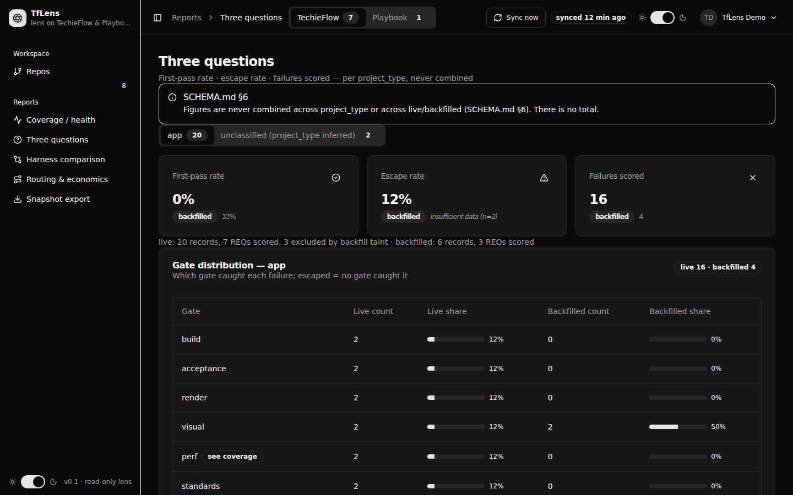
What it is for. The page the product exists for: first-pass rate, escape rate and failures scored,
read one project_type at a time. There is deliberately no "all" tab and no total row.
Control → data path#
Everything on this page comes from a single call:
objResult = await objMetricsEngine.AnalyseAsync(objUserId.Value, objFramework);IMetricsEngine is registered as CachingMetricsEngine wrapping MetricsEngine
(MetricsRegistration.cs). MetricsEngine.AnalyseAsync is the field-for-field port of analyse() in
.tfcore/telemetry/tf-metrics.sh, in the reference's own stage order:
- read the streams —
ReadGatesAsync,ReadRunsAsync,ReadSessionsAsync,ReadCommitsAsync,ReadUserReposAsync,ReadPbEventsAsync, thenDedupeCommits.PerRepo; - per-repo facts —
PerRepoFactsFor; - split provenance and compute the taint set —
TaintSet.FromBackfilled(gates); - figures per
(provenance, project type)—SegmentsFor→FiguresFor; - the pooled block —
Pooled.Compute.
| Region | Component | data-testid | Source |
|---|---|---|---|
| Standing note | Alert Info | schema-note | constant, always rendered |
| Type tabs | Tabs / TabsTrigger | type-tabs, type-tab-{type} | AnalysisResult.ProjectTypes; badge is LiveOf(type).Records |
| First-pass rate | StatTile → FigureText | kpi-first-pass-{type}, live-first-pass-{type}, backfilled-first-pass-{type} | SegmentFigures.FirstPassRate ← FirstPassRate.Compute(firstPass.Count, reqs.Count) |
| Escape rate | StatTile → FigureText | kpi-escape-{type}, live-escape-{type}, backfilled-escape-{type} | EscapeRate.Compute(escapedReqs.Count, failedReqs.Count) |
| Failures scored | StatTile (plain span) | kpi-failures-{type}, live-failures-{type}, backfilled-failures-{type} | SegmentFigures.GateDistributionN — an int, not a Figure |
| Segment facts | <p> | segment-facts-{type} | Records, ReqsScored, ReqsExcludedBackfillTaint per provenance |
| Gate distribution | DataTable … InitialPageSize="32" | gate-dist-{type} | GateRowsOf(type) |
| Distribution note | <p> | gate-dist-note-{type} | GateDistribution.Note(n) when a provenance has too few failures |
| Unlisted note | <p> | gate-dist-unlisted-{type} | UnlistedNote() — failures naming a gate outside GateOrder |
| Late-gate coverage | Card → FigureText | late-gate-{type}, late-gate-{type}-{gate}, late-gate-rate-{type}-{gate} | SegmentFigures.LateGateCoverage ← LateGateCoverageCalculator.Compute |
| Taint list | Collapsible | taint-trigger, taint-list | AnalysisResult.TaintedReqs |
The formulas (hover text, MetricsConstants / SCHEMA.md §8):
- First-pass rate —
gates where attempt=1 AND verdict=Verified ÷ distinct req_id, live-only, perproject_type. - Escape rate —
REQs with a gate="escaped" record ÷ REQs with any failure record, live-only. - Failures scored — count of gate values across all
verdict != Verifiedrecords.
The taint rule (REQ-FN-049) is the one to remember: a REQ with any backfilled verdict before its
first live verdict leaves the live numerator and denominator. FiguresFor filters
aRecords.Where(r => !aTainted.Contains(r.ReqId)) for the live bucket only, and counts the excluded
distinct REQs into ReqsExcludedBackfillTaint.
GateRowsOf walks MetricsConstants.GateOrder.Append(Unattributed) — build, acceptance,
render, visual, perf, standards, escaped, unattributed = 8 rows — and looks each gate up
in the live and backfilled distributions independently. The engine omits a gate that caught nothing;
the screen shows the whole order so the reader can see a gate caught nothing rather than wonder whether
it ran.
States#
- Loading — single
CardofSkeletonlines. - Error —
Alert Dangerthree-questions-errorwith the exception message. - Empty —
objTypes.Count == 0→Emptythree-questions-empty, "No gate records yet". - Insufficient data — any
FigurebelowMinN= 3 rendersinsufficient data (n=…)throughFigureText.SmallWhenNoNumbershrinks it totext-base font-normalso a refusal-to-answer is never rendered at headline size.
Gotchas#
- Nothing on this page may be added up. No total row, no combined column, no cross-type figure.
AnalysisResultcannot express one (ADR-007) and this page adds nothing that would. If a stakeholder asks for a total, the answer is no. - Backfilled is a labelled secondary line, never added to the live figure. The badge + value live in the
ValueContentslot rather than the description slot, becauseStatTile's description slot is a<p>and aBadgerenders a<div>, which the browser's parser hoists out of a paragraph. Do not "tidy" it back into the description slot. Failures scoredis not aFigure. It isGateDistributionN, anint, rendered in a plain<span>. It has noinsufficient datacase by design — a count of failures is always honest.- The tab selection is per-circuit, not persisted.
OnTypeSelectedAsyncsets a field and returnsTask.CompletedTask; nothing is re-queried and nothing is written. Reload the page and you are back on the first type. (The design doc says "tab choice persisted per session" — it is not.) - The formula "tooltips" are plain HTML
title=attributes, not TrBlazeUITooltipcomponents. Playwright cannot read them by hovering; read thetitleattribute instead. (Design doc saysTooltip.) unclassifiedis relabelled "unclassified (project_type inferred)" byLabelFor. It is a real segment key produced bySegment.KeyFor, not a UI placeholder.- Late-gate coverage reports live records only and states
ranbesidecaught— never a share, because a late gate's share of a raw distribution is structurally understated (SCHEMA.md §3.5).MetricsConstants.LateGatescurrently holdsperf → 2026-08-10; keep it in sync withLATE_GATESintf-metrics.sh.
/harness#
File: src/TfLens/Components/Pages/Harness.razor · @page "/harness" · authenticated ·
MainLayout · Framework switch shown
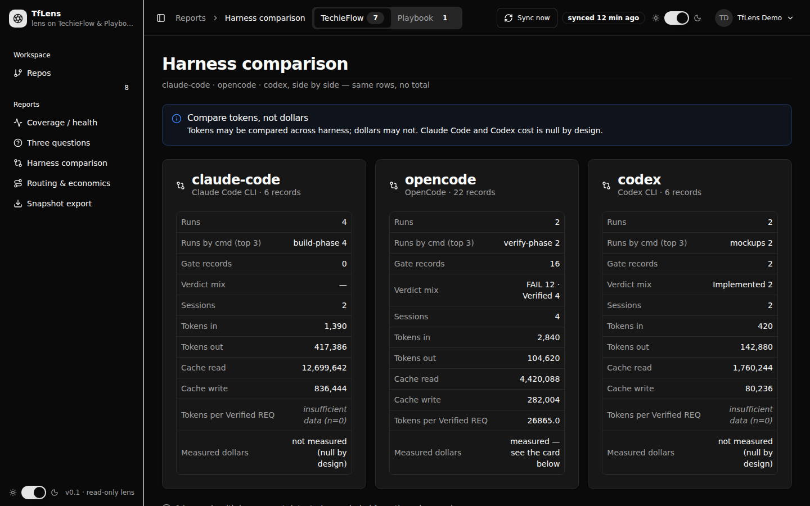
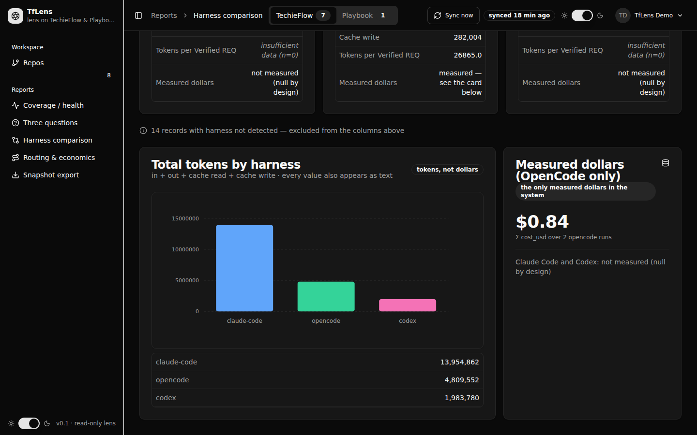
What it is for. The three harnesses side by side. The integrity rules are the feature.
Control → data path#
One call: objComparison = await objExtraMetrics.CompareHarnessesAsync(userId, objPreferences.Framework)
(src/TfLens.Core/Metrics/ExtraMetrics.cs).
| Region | Component | data-testid | Source |
|---|---|---|---|
| Standing note | Alert Info | harness-note | constant, never conditional |
| Column | Card | harness-col-{harness} | HarnessComparison.Columns, ordered by ExtraMetrics.HarnessOrder = ["claude-code","opencode","codex"] |
| Column rows | DataTable … InitialPageSize="50" | harness-table-{harness} | RowsFor(column) — 11 rows |
| Row values | FigureText or plain span | harness-{h}-runs, -cmds, -gates, -verdicts, -sessions, -tokens-in, -tokens-out, -cache-read, -cache-write, -tokens-per-verified, -cost | HarnessColumn.* |
| Not-detected footnote | div.tflens-footnote | harness-null-footnote | HarnessComparison.NotDetectedRecords |
| Tokens chart | ChartContainer → BarChart + ApexPointSeries | tokens-chart | objChartRows (HarnessTokenTotal) |
| Tokens table | DataTable … InitialPageSize="50" | tokens-table, tokens-total-{harness} | ToTokenRow = in + out + cache read + cache write |
| OpenCode dollars | Card | opencode-cost, opencode-cost-value, opencode-cost-basis, opencode-cost-note | HarnessComparison.OpenCodeCostUsd ← MeasuredOpenCodeCost(**sessions**), Σ cost_usd over deduped opencode session records; count in OpenCodeCostSessions. Corrected 2026-08-27 — it read runs, which carry no cost_usd at all (SCHEMA.md §4 puts the measurement on the session stream), so the figure was structurally null and the caption named the wrong stream. |
The four rules that shape this file:
- Three columns, always.
HarnessOrderis the detected vocabulary of SCHEMA.md §1, not a display preference. A harness that emitted nothing still gets a column, rendering—throughout (CountText(isEmpty, …)). A zero would read as "we measured it and it was nothing" rather than "there was nothing to measure". harness: nullis a footnote, never a fourth column and never dropped. Hidden only at n = 0.- Tokens may be compared across harness; dollars may not. There is no member on
HarnessComparison, and no markup here, that could hold a cross-harness dollar total. OpenCode is the only harness with a measuredcost_usd; the other two say "not measured (null by design)" rather than showing a zero. When OpenCode captured nocost_usdat all, its row says "no cost_usd captured yet" so it never contradicts the card below. - Any figure below
MinNrenders throughFigureText. OnlyTokens per Verified REQcarries aFigure;ColumnRow.Valueisnullfor every other row, and the cell falls back to the plain span.TokensPerVerifiedreturnsNotApplicablewhen no tokens were captured at all — because zero would read as a measurement of nothing rather than an absence of measurement.
States#
- Loading —
CardofSkeletonlines. - Error —
Alert Dangerharness-error. - Empty column —
IsEmpty(column)(Runs == 0 && GateRecords == 0 && Sessions == 0) →—in every count cell, andSubtitleForreads "{Product} · no records". - Empty chart —
objTokenRows.All(r => r.Tokens == 0)→Emptytokens-chart-empty. - No page-level empty state. With zero records the page still renders three
—columns. That is intentional.
Gotchas#
- The chart works. Verified live on TechieFlow:
[data-testid="tokens-chart"]contains anapexcharts-svgwith 3 bar paths and 3 x-axis labels, andwindow.ApexChartsis a function. See the deviation note under/routing—Routing.razor's TR-011 comment claiming the ApexCharts runtime is never loaded is stale and wrong. - Cosmetic defect: the chart's x-axis labels are doubled in the DOM (
"claude-codeclaude-code"), though they paint once. If you assert on axis text, account for it. - The chart is supplementary: TrBlazeUI's chart API carries no axis or label control, so every value it draws is also printed as text in
tokens-tablebeside it. Never remove the table to "clean up". HarnessTokenTotalcarries exactly two properties because TrBlazeUI 2.0.0's chart types infer the category and series from the item type's properties. Adding a third property to that record will change what the chart draws.Verdict mixusesPairsText(…, int.MaxValue)— the whole mix, unbounded.Runs by cmdtakes the top 3. Both render—when empty.- This page subscribes to both
ShellState.ChangedandShellPreferences.Changedand calls the sameReloadAsynchandler, so a sync and a framework change both re-query.
/routing#
File: src/TfLens/Components/Pages/Routing.razor (1,188 lines — the largest page) ·
@page "/routing" · authenticated · MainLayout · Framework switch shown
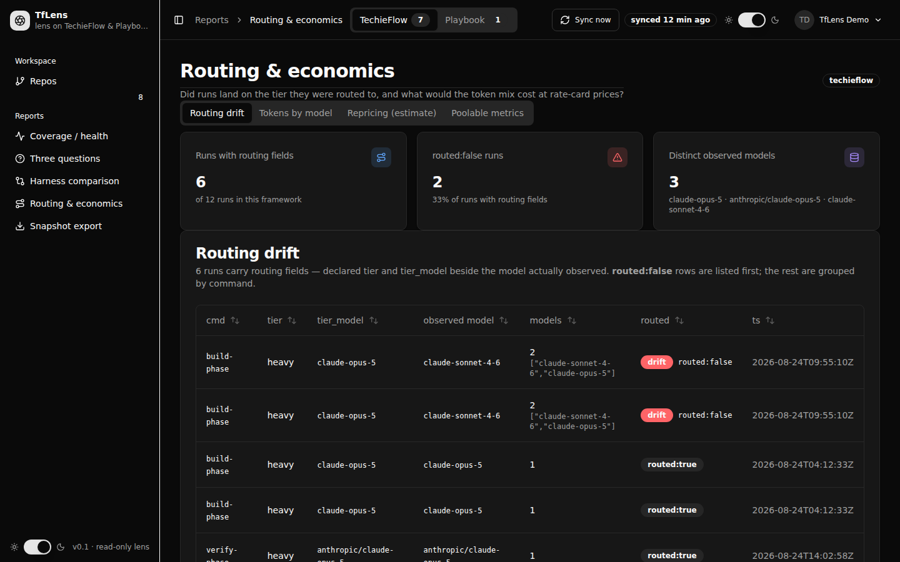
What it is for. Did runs land on the tier they were routed to, and what would the token mix cost at rate-card prices? This is the page the integrity rules bite hardest on.
Two engine calls#
objRouting = await objExtraMetrics.AnalyseRoutingAsync(userId, objFramework);
objPooled = (await objMetricsEngine.AnalyseAsync(userId, objFramework)).Pooled;AnalyseRoutingAsync re-reads prices.json every time (RateCard.LoadAsync(options.PricesPath)),
which is what makes the edit dialog's Save show up in the repricing cards without a page reload.
Tab: Routing drift — routing-tab-drift / routing-panel-drift#
| Region | data-testid | Source |
|---|---|---|
| Runs with routing fields | kpi-routing-fields | RoutingAnalysis.RunsWithRoutingFields; sub-line of {Pooled.RunsTotal} runs |
routed:false runs | kpi-unrouted | RoutingAnalysis.UnroutedRuns; sub-line MetricsConstants.Pct(unrouted, withFields) |
| Distinct observed models | kpi-distinct-models | RoutingAnalysis.DistinctModels; sub-line lists the models themselves |
| Drift table | drift-table, drift-row-count | DriftRows — routed:false first (as the service ordered them), then the rest grouped by cmd, newest ts first |
| Empty | drift-empty | "no routing fields captured yet" |
HasRoutingFields(run) decides membership. Null string fields render Missing (—), never a blank
cell. ModelCount splits the comma-separated models field and shows the raw list below the count when
1.
Tab: Tokens by model — routing-tab-models / routing-panel-models#
| Region | data-testid | Source |
|---|---|---|
| Table | model-tokens | RoutingAnalysis.TokensByModel ← ExtraMetrics.TokensByModel(runs), the four §2.5 token classes summed per model actually observed, not per tier requested |
| Bars | model-tokens-bars | hand-rolled div.tflens-bar with an inline height:% |
| Empty | model-tokens-empty | — |
Tab: Repricing (estimate) — routing-tab-repricing / routing-panel-repricing#
| Region | data-testid | Source |
|---|---|---|
| Missing prices | missing-prices | RoutingAnalysis.MissingPriceModels — named, excluded from both estimates, never priced at zero |
| Actual mix | repricing-actual, repricing-actual-value, repricing-actual-estimate, repricing-actual-excluded | RoutingAnalysis.ActualMixUsd |
| Counterfactual | repricing-max, repricing-max-value, repricing-max-estimate, repricing-max-excluded | RoutingAnalysis.AllAtMaxUsd; title names MostExpensiveModel |
| Delta | repricing-delta, repricing-delta-value, repricing-delta-share, repricing-delta-estimate | RoutingAnalysis.DeltaUsd = max − actual |
| Edit prices | edit-prices → dialog edit-prices-dialog, edit-prices-table, price-{model}-{input|output|cache-read|cache-write}, edit-prices-invalid, edit-prices-cancel, edit-prices-save | RateCard.LoadAsync / RateCard.SaveAsync(options.PricesPath, models) |
Every money figure on this page is tokens × the operator's rate card, never measured spend. Each of
the three cards renders RateCard.EstimateLabel verbatim beside its number
("estimate — tokens × rate card, not measured spend"). Reprice prices exactly the same token base
twice so the difference is meaningful: a run excluded for want of tokens, or a model the card does not
price, is excluded from both sides. "Most expensive" is decided by pricing the whole eligible mix at
each priced observed model and taking the largest result — the shape of the workload, not a headline
rate.
DeltaText renders a saving as a negative (−$1.89) because it is money the observed mix did not
reach; a zero delta takes no sign.
Tab: Poolable metrics — routing-tab-poolable / routing-panel-poolable#
Five StatTiles, each rendering a Figure through FigureText, all from AnalysisResult.Pooled
(Pooled.Compute):
| Tile | data-testid | Field |
|---|---|---|
| Rework ratio | pooled-rework / pooled-rework-value | ReworkRatio — fix-mode runs over build-phase runs |
| Batch size (median) | pooled-batch / pooled-batch-value | BatchSizeMedian |
| REQ throughput | pooled-throughput / pooled-throughput-value | ThroughputMedianReqsPerHour |
| Tokens per Verified | pooled-tokens-per-verified / -value | TokensPerVerifiedReq — all harnesses pooled |
| Commit cadence | pooled-commit-cadence / -value | CommitsPerActiveDay; sub-line states CommitDuplicatesCollapsed |
These count events rather than score requirements, which is why the reference pools them across
harnesses. PooledMetrics.CostUsd is null by design and is deliberately not rendered anywhere — do
not add it.
States#
- Loading —
CardofSkeletonlines. - Error —
Alert Danger AccentBorderrouting-error. - Not signed in —
objLoadError = "Sign in to see the routing view."(the only page that sets a load error by hand). - Per-tab empty —
drift-empty,model-tokens-empty. The repricing and poolable tabs have no empty state; they render—/insufficient data (n=…). - Save refusal —
HasRateErrorsdisables Save and showsedit-prices-invalid.
Gotchas#
- A blank rate-card row means "not priced" and is dropped from the file, never saved as zero.
IsRowValidaccepts a wholly blank row or four valid rates; a half-filled row is refused rather than silently completed with zeros. Saving a zero for an unpriced model is the one thing SCHEMA.md §4 forbids. OnParametersSetAsynchere guards onobjIsLoaded && objLoadedFramework == objFramework— unlike the other report pages, which guard onobjIsLoadedalone. That is why this page re-queries correctly on a framework change even without theChangedevent firing.TabsListneeds.tflens-tabs-scroll. Four triggers are wider than a 390 px viewport, and without that wrapper the shell's page container scrolls sideways. Same reason the drift table sits inoverflow-x-auto.data-testid="price-{model}-input"embeds the raw model id, which contains/for models likeanthropic/claude-opus-5. Quote your selectors.- Rate inputs are held as text, not
decimal, so a bad entry can be shown back to the operator.ParseRateis only called afterIsRowValidhas passed.
Deviation from docs/TfLens-UIDesign.md#
The models tab hand-rolls its bars instead of using ChartContainer → BarChart. The comment at
Routing.razor:308-311 (TR-011) justifies this: "TrBlazeUI's BarChart renders an empty div in this app
— the ApexCharts runtime the package wraps is never loaded."
That claim is no longer true. /harness renders the same ChartContainer → BarChart +
ApexPointSeries and it draws correctly — verified live: 3 .apexcharts-bar-area paths, 3 axis labels,
window.ApexCharts is a function. So the app now has two different answers to the same problem, and
only one of them was ever needed. If you are touching this file, the CSS bars can be replaced with the
BarChart the design doc specifies; if you leave them, at least update the comment.
The design doc also specifies two repricing cards; the code renders three (actual, counterfactual, delta) — the delta got promoted from the separate "Delta" row into the same grid. That is an improvement and matches the screenshot.
/misses#
Files: src/TfLens/Components/Pages/Misses.razor (1,766 lines) + Misses.razor.css ·
@page "/misses" · authenticated · MainLayout · breadcrumb Reports › Misses & rework ·
Framework switch shown · sidebar item nav-misses, between Routing and Snapshot export.
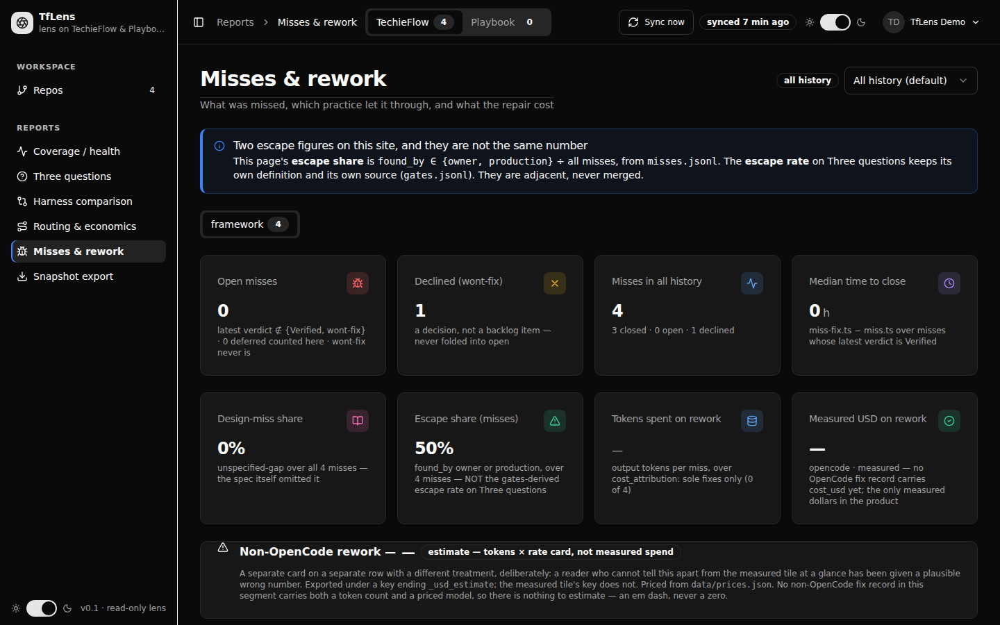
What it is for. What was missed, which practice let it through, and what the repair cost. It is
the sixth report page and the first one built on the misses stream (BRD-118..BRD-126, REQ-UI-035..038).
Read this before you fix anything here. Six behaviours on this page look like defects and are not. Every one of them is a rule with a test behind it, and "correcting" any of them turns a refusal to answer into a flattering number:
- Measured and apportioned rework cost are never blended.
MissCosthas exactly three members —Sole,Apportioned,NoneCount— so a combined figure has no property to bind to (ADR-019). Reflection tests in two projects pin it:MissInvariantContractTests.MissCostExposesNoPropertyThatCouldHoldABlendedFigureand.NoMissResultTypeCarriesATotalOrBlendedFigureintests/TfLens.Guardrails.Tests, andMissInvariantTests.MissCostCarriesTheSplitAndNothingElseintests/TfLens.Core.Tests. - Per-model, per-agent and per-phase figures count
OriginConfidence == "linked"records only, and the excluded count is rendered, never hidden (miss-taint-count, always, even at zero). An exclusion the reader cannot see is indistinguishable from a bug. - The
why_misseddistribution's denominator is the records that carry the field, printed on the card's face (miss-whymissed-denominator), and bounded by the eligibility floorMetricsConstants.FieldSince["why_missed"] = 2026-08-28. Never the miss count. wont-fixis never folded into open. It is its own tile.deferredis open. The producer's collapse check asks a different question and the two are deliberately not reconciled.- The period filter narrows the record set and re-runs
MissFigures.Compute. It does not recompute anything in the view. That is why every engine rule still applies under a filter, and why a narrow window degrades toinsufficient data (n=…)rather than to a wrong number. - An absent cost renders
—, never$0.00, and everyFigurerenders throughComponents/Shared/FigureText.razor(gotcha 7).
Control → data path#
The page injects ITelemetryStore directly — it does not go through IMetricsEngine, because it
has to re-run the computation per period. Four reads, then one engine call:
objAllMisses = await objStore.ReadMissesAsync(userId, framework); // "Miss"
objAllFixes = await objStore.ReadMissFixesAsync(userId, framework); // "MissFix"
objAllAmends = await objStore.ReadMissAmendsAsync(userId, framework); // "MissAmend"
objAllRuns = await objStore.ReadRunsAsync(userId, framework); // per-phase denominator
objRateCard = await RateCard.LoadAsync(objOptions.Value.PricesPath);
// Recompute(), on load and on every period change:
objFold = MissAmendFolder.Fold(vMisses, vAmends); // read-time fold, before any figure
objResult = MissFigures.Compute(vMisses, vFixes, vAmends, vRuns);MissFigures.Compute folds amendments again internally — that is not redundant. The page keeps
its own objFold because the detail table and the raw-record disclosure render records, and they
must show the same folded values the figures were computed from. MissAmendFolder.Fold runs before
a single figure is counted, so a why_missed supplied only by a later miss-amend reaches the
distribution (REQ-FN-075) while the stored "Miss" row still carries null — an amend completes a
record, it never edits one.
| Region | Component | data-testid | Source |
|---|---|---|---|
| Period badge | Badge Variant=Outline | misses-period-label | PeriodOption.Badge — the window is stated even when the select is closed |
| Period filter | Select + DisplayTextSelector | misses-period | PeriodOptions = all history (default) / 7 / 30 / 90 days → OnPeriodChangedAsync → Recompute() |
| Standing escape note | Alert Info AccentBorder | miss-escape-note | constant page copy, never a tooltip (BRD-118) |
| Type tabs | Tabs / TabsTrigger | miss-type, miss-type-{type} | MissAnalysis.ProjectTypes; badge is SegmentOf(type).Misses |
| Open misses | StatTile | kpi-open | MissSegmentFigures.OpenMisses; sub-line names the deferred count |
| Declined | StatTile | kpi-wontfix | WontFix — its own tile, never part of open |
| Misses this period | StatTile | kpi-period | Misses; sub-line n closed · n open · n declined |
| Median time to close | StatTile → FigureText | kpi-median-close, kpi-median-close-value | MedianTimeToCloseHours — timed over Verified misses only; a wont-fix is a decision and a deferred has not closed |
| Design-miss share | StatTile → FigureText | kpi-design-share, -value | DesignMissShare = miss_class == "unspecified-gap" ÷ all misses |
| Escape share | StatTile → FigureText | kpi-escape-share, -value | EscapeShare = found_by ∈ {owner, production} ÷ all misses |
| Tokens on rework | StatTile → FigureText | kpi-rework-tokens, -value | Cost.TokensPerMissFixed.**Sole** — the measured column only |
| Measured USD | StatTile (plain span) | kpi-rework-usd, -value | MeasuredUsdDisplay ← the OpenCode row's MeasuredUsdTotal, or — |
| Rate-card estimate | Card Class="tflens-estimate" | kpi-rework-usd-estimate, -value, -label, kpi-rework-usd-unpriced | EstimateUsd — non-OpenCode fixes priced through RateCard, carrying RateCard.EstimateLabel |
| Origin cross-tab | hand-rolled <table class="tflens-table"> | miss-origin, miss-origin-{phase}, miss-origin-unattributed, miss-origin-none | SegmentTaint.Linked grouped by OriginPhase × MissClass, plus Attribution.MissRatePerOriginPhase for Runs / Misses-per-run |
| Attribution exclusion | <p> in CardFooter | miss-taint-count | MissAttributionSet.AttributionExcluded + ExcludedByConfidence + Reason — always rendered |
| Failed practice | DataTable … InitialPageSize="32" | miss-whymissed, miss-whymissed-table, miss-whymissed-denominator, miss-whymissed-note, miss-whymissed-eligibility | FailedPracticeDistribution over the vocabulary of MissAmendFolder.AmendableFields["why_missed"] |
| Observational warning | Alert Warning AccentBorder | miss-observational | standing copy (BRD-124) — this band does not show causation |
| By origin model | DataTable … InitialPageSize="32" | miss-origin-model, -table, -none | Attribution.ByOriginModel |
| By origin agent | DataTable … InitialPageSize="32" | miss-origin-agent, -table, -none | Attribution.ByOriginAgent + the dominant class read off the same linked records |
| Cost: measured | Card → FigureText | miss-cost-measured, miss-cost-sole, miss-cost-measured-usd | Cost.TokensPerMissFixed.Sole, Cost.SoleRecords |
| Cost: apportioned | Card → FigureText | miss-cost-apportioned, -value | Cost.TokensPerMissFixed.Apportioned, Cost.SharedRecords |
| Cost: unattributable | Card | miss-cost-unattributable, miss-cost-none, miss-cost-attribution-missing | Cost.TokensPerMissFixed.NoneCount, Cost.AttributionMissing |
| No-blend note | <p> | miss-cost-no-blend | states ADR-019 on the page |
| Detail table | DataTable ShowToolbar ShowPagination InitialPageSize="25" | miss-detail, miss-detail-table, miss-raw-{missId} | DetailRows over SegmentMisses (folded), newest first |
| Raw record | Collapsible → CodeBlock | miss-raw-trigger, miss-raw, miss-raw-note | the stored record as JSON, overflow reduced to field names only (SCHEMA.md §9) |
The four bands, and why each rule is shaped that way#
Band 2 — the origin cross-tab is linked-only, and says so twice. MissAttributionTaint.Partition
splits the segment's misses on OriginConfidence == "linked"; everything else is counted into
ExcludedByConfidence (an absent value buckets as not-recorded, deliberately not as unknown,
which is a real value in the producer's vocabulary). The excluded records get an unattributed row in
the table and the miss-taint-count footer, which names the count, the breakdown and the reason
verbatim from MissAttributionTaint.ExclusionReason. There is no parameter, flag or overload that
returns those records to a figure — relaxing the rule means editing MissAttributionTaint.cs
(REQ-NFR-013).
OriginConfidence is derived by tf-emit.sh and never written by an agent, and the emitter forces
origin_model / origin_harness to null when its lookup fails. That is what makes the guarantee
real rather than aspirational: the filter is on a value the producer controls.
Band 2 — the failed-practice denominator. MissFigures.CountBy skips a null entirely: a null is
not a bucket, not an other, not a zero. So WhyMissedN counts only records that carry the field,
and every share on the card is read against that. The card's badge prints
{Assessed} of {Eligible} misses assessed and the footer separates the two ways a miss can be absent
from the numerator:
- not assessed — the field was available and nobody filled it in;
- predates the field — the record was written before
FieldSince["why_missed"] = 2026-08-28, and it leaves the denominator entirely rather than being backfilled with a value nobody assessed.
The rows themselves come from the closed vocabulary in
MissAmendFolder.AmendableFields["why_missed"], not from what the data happened to contain, so a
practice that caught nothing renders a real 0 rather than vanishing. Values the engine reports but
the vocabulary does not know are appended.
Band 3 is labelled observational on the page. Miss counts per model and per agent are confounded
by which model gets the hard work. miss-observational says so in an Alert, not a tooltip, and the
n linked badge on both cards repeats the attribution basis.
Band 4 — three columns and never one. Measured is cost_attribution: sole — one fix run, one
miss, the whole token window is that miss's cost. Apportioned is shared:n, one window divided
equally across n misses: arithmetic, not measurement, and stated as such. Unattributable is
cost_attribution: none — a count, never a divisor. AttributionMissing (absent or unrecognised) is
a fourth number and is deliberately not folded into NoneCount: none is a value the emitter
wrote, absent is nobody having said, and those are different facts.
Measured dollars come from OpenCode records only and are never summed across harnesses
(MissFigures.HarnessRow does not even read a cost_usd on another harness's record). Rate-card
dollars live on their own dashed card, on their own row, carrying RateCard.EstimateLabel and
exported under a key ending _usd_estimate — the measured tile's key does not. Models the card does
not price are named in kpi-rework-usd-unpriced and left out, never costed at zero.
One known divergence from the reference is deliberate. analyse_misses in tf-metrics.sh
computes sum(tokens_out or 0) / len(sole), averaging a repair whose tokens were never recorded in as
a zero. MissFigures.MoneyFor divides by the records that actually carry a count. Recorded as
TF-005 / DECISIONS.md D-012. The two agree on every dataset where every sole record carries
tokens_out, so the divergence is latent rather than live — do not "fix" it by matching the
reference, parity would go green by adopting the weaker number.
States#
- Loading —
objIsLoaded == false→ oneCardof threeSkeletonlines, the same block every report page uses. - Error —
Alert Danger AccentBordermisses-errorwith the exception message;objResultandobjFoldare both reset toEmptyfirst. - Empty (TechieFlow) —
objResult.MissesTotal == 0→Emptymisses-empty/misses-empty-connect, "TfLens readsdocs/metrics/misses.jsonl; it never writes one." - Empty (Playbook) —
PlaybookEmptyplusmisses-playbook-plan, a table describing the four bands, andmisses-playbook-zero-note. The Framework switch is rendered rather than hidden for a surface one framework has and the other does not (BRD-126); the note says explicitly that a zero here is absence, not a good score. - Playbook, non-empty —
PlaybookAxisNotereplaces the escape note. The layout does not change. - Insufficient data — any
FigurebelowMinN= 3 rendersinsufficient data (n=…)throughFigureText, shrunk bySmallWhenNoNumberso a refusal is never at headline size. A distribution belowMinNrenders its own…-noteline instead. - Absent —
NotApplicablerenders—. So does an absent measured or estimated dollar amount.
Observed 2026-08-28#
Signed in as userId 2 at 1440×900. 74 data-testids, 0 blank icons, no page-level horizontal
scroll, no console or page errors. Tables: miss-origin 2 rows, miss-whymissed-table 7,
miss-origin-model-table 1, miss-origin-agent-table 1, miss-detail-table 4.
The dataset is 4 misses / 4 fixes / 0 amendments, all in one segment. miss-type rendered a
single tab, framework (badge 4). What actually rendered:
| Control | Rendered | Reading it |
|---|---|---|
misses-period | All history (default) | the DisplayTextSelector fix for TR-020 is working — without it this reads all |
kpi-open | 0 | 3 closed · 0 open · 1 declined |
kpi-wontfix | 1 | the declined miss is here and not in open |
kpi-median-close | 0h | three closed misses, so the figure is above MinN |
kpi-design-share | 0% | a real zero: no unspecified-gap in 4 misses |
kpi-escape-share | 50% | 2 of 4 found_by ∈ {owner, production} |
kpi-rework-tokens | — | 0 of 4 fixes are cost_attribution: sole — an absence, not a zero |
kpi-rework-usd | — | no OpenCode fix record carries cost_usd |
kpi-rework-usd-estimate | — | no non-OpenCode fix carries both a token count and a priced model |
miss-origin | 1 phase row (log-miss) + miss-origin-unattributed | 1 other + 1 partial-implementation = 2, over 3 runs → 67% |
miss-taint-count | 2 of 4 misses excluded … (inferred: 2) | the exclusion is on the page, as required |
miss-whymissed | 7 rows, instruction-ignored 1 · 100%, 6 at 0 · — | the closed vocabulary renders in full |
miss-whymissed-note | insufficient data (n=1) | one assessed record cannot carry a share honestly |
miss-origin-model-table | claude-opus-5 · 1 · 100% | linked records only (2 of 4) |
miss-origin-agent-table | flow-master · 2 · 100% · other | " |
miss-cost-* | — / — / 0 | measured, apportioned, unattributable — three columns, no blend |
miss-detail-table | 4 rows, miss-raw-MISS-TechieFlow-20260828-01..04 | one row per miss |
Six of the figures on this page render — or insufficient data, and that is the correct
answer for this dataset. The first instinct on seeing that screen is that the page is broken. It
is not: 4 records, 0 of them sole-attributed, 1 of them carrying why_missed.
Not observed in this pass: the Playbook state, the empty state, any period other than All history, the raw-record disclosure open, and any apportioned or measured-dollar figure (no record supports one).
Gotchas#
- Do not add a blended cost figure, even "just for the export".
MissCostcannot hold one, and three reflection tests across two projects assert that no miss result type carries a total or blended member. The page states the rule on itself inmiss-cost-no-blend. miss-taint-countrenders even when nothing was excluded. Hiding it at zero would make "no exclusions" look identical to "the footer was never built". Same reasoning as/harness'sharness-null-footnote.SegmentTaintre-partitions on every access. It is a computed property callingMissAttributionTaint.Partition(SegmentMisses), andSegmentMissesre-filtersobjFold.Misseseach time. That is deliberate — one rule in one place, not aWhereclause copied into the view — but it means the origin band does real work per render. If this page ever gets slow with thousands of misses, memoiseSegmentTaintper(period, type); do not inline the predicate.LinkKeyis spelled differently in the page and in the engine.MissFigures.LinkKeyisrepo + " " + missId;Misses.razor's privateLinkKeyis$"{repo}{missId}". Both are internally consistent — nothing joins across the two — but they are not interchangeable, so do not "share" one without checking every call site.- A record whose
tsTfLens cannot parse stays in every period window.IsInPeriodreturnstrueon a parse failure. Silently dropping a record because its own clock string is odd would understate every figure with no visible reason. - The period filter is per-circuit and is not persisted. Reload and you are back on All history. So is the type tab (
OnTypeSelectedAsyncsets a field and returnsTask.CompletedTask). Recompute()resets the raw disclosure (objRawMissId = null; objIsRawOpen = false). A change of period closing the open record is intentional — the record may not be in the new window.CollapsibleContentis guarded by an@if, not merely closed.TR-018: a closedCollapsibleContentstill lays its children out and overlaps what follows. Do not remove the guard.Progress Class="w-16", notw-20. See cross-cutting gotcha 10 —w-20is absent from the shipped stylesheet and the share bars rendered at zero width.- The chip icons are
circle-check, notcheck-circle.TR-022; the alias renders an empty box. - This page reads
ITelemetryStoredirectly and so bypassesMemoryAnalysisCache. It is not served by theCachingMetricsEngineat all, which means it is not subject to gotcha 5 — seeded rows show up here immediately while/three-questionsmay still serve a cached analysis. Two pages, two freshnesses. FrameworkNamesis the axis,project_typeis the segment, and they are different things. There is deliberately no "all types" entry onMissAnalysis.Liveand no total row anywhere on the page — the same rule as/three-questions(ADR-007).
Deviation from docs/TfLens-UIDesign.md#
- The design specifies
Progressbars atw-20in the failed-practice card. The code shipsw-16becausew-20is not intrblazeui.css(TR-021). Restore the design's value only alongside a scoped-CSS rule that actually defines the width. - The design's period control is a plain
Select; the code addsDisplayTextSelectorand amisses-period-labelbadge beside it, because the closed trigger otherwise shows the raw key (TR-020) and because the window should be legible without opening anything. - The design puts the origin cross-tab in a
DataTable. The code hand-rolls a<table class="tflens-table">inside.tflens-scroll-x, becauseDataTableColumnneeds a compile-time property per column andmiss_classhas no closed vocabulary — the columns are whatever the linked records carry. Thewhy_missed, model, agent and detail tables areDataTables, all with an explicitInitialPageSize(gotcha 1).
/export#
Files: src/TfLens/Components/Pages/Export.razor (@page "/export", ~95 lines — decides which
state) and src/TfLens/Components/Pages/Export/ExportSurface.razor
(@namespace TfLens.Components.Pages.ExportParts, 572 lines — everything the screen actually does).
Authenticated · MainLayout · Framework switch shown.
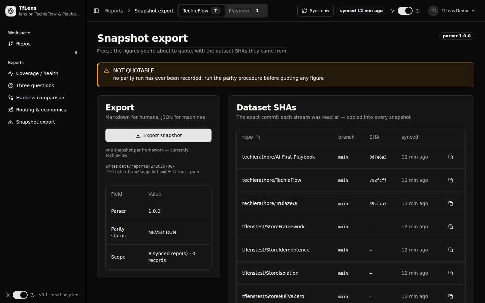
What it is for. Where a number stops being a dashboard reading and becomes something someone might quote — so it is also the page that says whether quoting it is honest.
Export.razor renders <ExportSurface UserId Framework /> for TechieFlow, and the same component
wrapped in <PlaybookState> for Playbook. The surface is byte-identical between the two states, which
is the point: they cannot drift apart into two slightly different export screens.
Control → data path#
| Region | Component | data-testid | Source |
|---|---|---|---|
| Parser badge | Badge Variant=Outline | export-parser-version | ParserVersion.Current |
| Quotable banner | Alert Success/Warning AccentBorder | quotable-banner | ParityRecord.StatusFor(parity, ParserVersion.Current) |
| Export button | Button | export-now | ISnapshotExporter.ExportAsync(userId, framework, today) → SnapshotExporter writes snapshot.md + tflens.json |
| Framework note | <p> | export-framework-note | FrameworkLabel |
| Target folder | <p> | export-target | data/reports/{userId}/{yyyy-MM-dd}/{framework} |
| Export facts | DataTable … InitialPageSize="512" | export-facts | Parser · Parity status · Scope ({shaRows.Count} synced repo(s) · {RecordTotal} records) |
| Dataset SHAs | DataTable … InitialPageSize="512" | dataset-shas, dataset-shas-table, copy-sha-{slug}, dataset-shas-empty | ITelemetryStore.ReadSyncStateAsync(userId) → SELECT * FROM "SyncState" WHERE "UserId" = @aUserId ORDER BY "Repo" |
| Copy SHA | Button Variant=Ghost | copy-sha-{slug} | IJSRuntime.InvokeAsync<bool>("tflens.copyText", sha) |
| Past snapshots | DataTable … InitialPageSize="512" | snapshots, snapshots-table, snapshot-status-{slug}, snapshot-md-{slug}, snapshot-json-{slug}, snapshots-empty | ISnapshotExporter.ListAsync(userId) — read back off the folder tree |
| Download links | Button Variant=Link | as above | ExportEndpoints.DownloadUrl(date, framework, file) → GET /api/export/download, RequireAuthorization() |
| Parity card | Card | parity-record, parity-facts, parity-none, parity-output | ParityRecord.Read(options.ParityLastPath) = data/parity-last.json |
| Compare output | CodeBlock.razor | parity-output | ParityRecord.CompareOutput |
The quotable banner is the safety device of the whole product. It is computed from
data/parity-last.json against the build's own parser version, and there is no code path anywhere in
TfLens that can make it green by any other means. While no parity run has been recorded, the honest
answer is NOT QUOTABLE, and that is what renders.
BannerReason distinguishes two facts that are both NOT QUOTABLE:
objParityStatus | Reason rendered |
|---|---|
QUOTABLE | "the parity run of {date} covers parser {version}; these figures may be quoted" |
NOT QUOTABLE | "parser changed after the last parity run; re-run the parity procedure" |
NEVER RUN (default) | "no parity run has ever been recorded; run the parity procedure before quoting any figure" |
Claiming the parser changed after a parity run that never happened would be a false statement about the
evidence. NoParityMessage draws the same distinction for the card below, and treats a failed
recorded run as exactly equal to no run at all.
BannerLiteral ("{status} — {reason}") is set as the alert's title attribute so the exact wording
is one searchable string in the DOM.
States#
- Loading —
objIsLoadedis guarded byobjLoadedKey == $"{UserId}|{Framework}", so a change of either re-reads. There is no skeleton on this surface; it renders with empty tables first. - Empty —
dataset-shas-empty("no dataset SHAs yet", action →/repos) andsnapshots-empty("no snapshots yet"). - Parity absent / failed —
Alert Warningparity-none. - Exporting —
objIsExportingdisables the button and swaps in aSpinner; success and failure both toast, andReloadAsyncruns infinally.
Gotchas#
objShaRowsandobjSnapshotsare rebuilt as fresh instances on every reload, never cleared in place.DataTabletakes its rows as a parameter, and a parameter whose reference has not changed is not re-processed — mutating these lists would leave a just-written snapshot invisible until the page was navigated away from.- The parity stamp is re-read on every load, never cached. A parity run recorded while the page was open must turn the banner green on the next refresh, not on a restart.
- All four
DataTables setInitialPageSize="512"deliberately. Here truncation would be a correctness failure, not a cosmetic one: a truncated dataset-SHA table describes a dataset the snapshot did not actually cover, and the parity card's facts run to seven rows. - The Dataset SHAs table and the Scope fact are not framework-filtered.
ReadSyncStateAsynctakes only a user id, so the table lists every repo on both axes while the header says TechieFlow. Verified live: 8 rows shown under aTechieFlow 7 / Playbook 1switch. If that matters for your change, filter by joining"UserRepo"."Framework"— the store has no framework-scoped overload of this read. RecordTotalsums the"SyncState"counters, so it reads0on seeded data (gotcha 6).- There is deliberately no
/playbookroute. The framework is chosen by the header switch, which re-queries every figure on the new axis. CopyShaAsyncdepends ontflens.copyTextinwwwroot/app.jsand reports a refusal honestly ("The browser refused clipboard access") rather than pretending it worked.- Download links go through an authorized minimal-API endpoint that derives the reports root from the auth cookie and takes no user id, so one user cannot fetch another's snapshot by editing a query string.
Deviation from docs/TfLens-UIDesign.md#
- The design's past-snapshots table is
date · parser version · parity status · links; the code adds a framework column between date and parser version. Correct — snapshots are per framework. - The design puts
data-testid="snapshots"on the table; the code puts it on the wrapping<div>and the table carriessnapshots-table. Same pattern fordataset-shas/dataset-shas-table. Assert on the-tableid. - The design says the compare output is a
pre; §Library gaps then says it must beCodeBlock. The code usesComponents/Pages/Export/CodeBlock.razor, a local shim reproducing the documented shape (titled bar, copy action, monospaced scrolling body) because TrBlazeUI 2.0.0 ships noCodeBlock(TR-003). Drop it when the library ships the real one.
The Playbook axis#
Selecting Playbook in the header switch writes tflens-framework=playbook and raises
ShellPreferences.Changed; every report page answers by re-querying the engine on the new axis
(ADR-016), never by filtering what it already rendered.
Runtime-verified 2026-08-27 — fully wired. (Supersedes the earlier "partially wired" note from the same day, which recorded the state before REQ-UI-034 / REQ-FN-067 / REQ-FN-070 were built.) Driving the switch to Playbook and visiting all five report pages: every one renders
playbook-axis-noteand real figures rather than the empty state —/theeventsstream card plus the observed-fields collapsible,/three-questionspb-phases-allandpb-phases-/build-phasewith a tab per process gate,/harnesspb-model-tokens+pb-measured-cost+pb-phases-harness,/routingits three panels includingpb-agent-split, and/exportthe export surface. The separation rule still holds: nogate-dist-*table is populated while the Playbook axis is selected, sophase_gateandgatenever share a table or chart. Switching back to TechieFlow restores the TechieFlow surface on all five. Render + visual gates clean at 1280 and 390.Two things are deliberately NOT rendered, and say so on screen rather than inventing a number.
/harnessshowspb-harness-unavailableinstead of the mockup's three harness columns, becauseevents.ndjsoncarries no harness field (seePlaybookWireFields, read off the Playbook's own emitter source) — there is no dimension to group by./routingomits the mockup's counterfactual repricing tab, because repricing is a rate card applied by the metrics engine andPlaybookAnalysisexposes no repriced figure; pricingTokensByModelin the view would produce a dollar amount with no engine behind it. Both would require a new member onIPlaybookReportBuilder.The three questions themselves render
—on every gate. Not a bug:events.ndjsoncarries no verdict field, so first-pass rate / catch share / escape rate areNotApplicablewith the reason printed beside them (DECISIONS.mdS-001). They will populate only when the joiner output lands. Note also that the archivedevents-*.jsonlindata/raw/is a build-harness fixture, not a captured run — 9 identical sessions, noparentIDanywhere — which is whySchemaStatusstaysEmitterSourceDerivedand every Playbook figure carries theplaybook-provisionalcaveat.
/misses is the sixth report route and has a Playbook state of its own (added 2026-08-28). It
renders PlaybookAxisNote when the axis is Playbook and non-empty, and PlaybookEmpty plus
misses-playbook-plan / misses-playbook-zero-note when it is empty — which today it always is,
because events.ndjson carries no miss records. The plan card describes the same four bands rather
than hiding the page: the switch changes the data, never the layout or the rules (BRD-126). It also
says on its face that a zero there is absence, not a good score. Not driven in the 2026-08-28
observe pass.
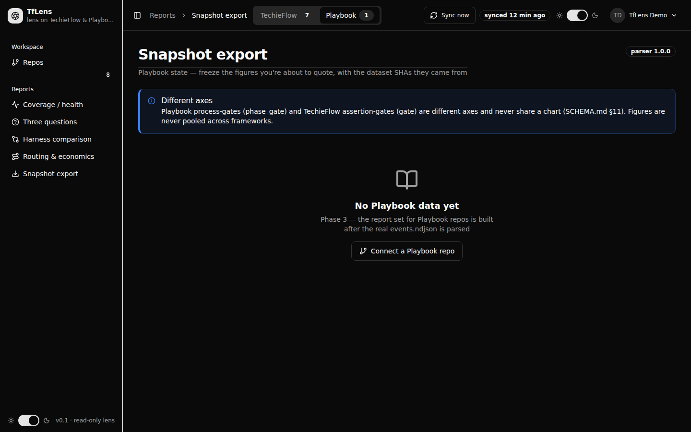
Shared components (src/TfLens/Components/Shared/Playbook/):
| Component | data-testid | Purpose |
|---|---|---|
PlaybookState.razor | — | Loads IPlaybookReportBuilder.BuildAsync(userId) and picks the state |
PlaybookAxisNote.razor | playbook-axis-note | The standing "Different axes" note (SCHEMA.md §11) |
PlaybookEmpty.razor | playbook-empty, playbook-empty-connect | The Phase-3 empty state |
| — | playbook-provisional | Warning when PlaybookAnalysis.SchemaStatus != Discovered |
PlaybookPhaseTotals.razor, PlaybookAgentSplitPanel.razor, PlaybookObservedFields.razor | — | Built, not currently referenced by any page |
IPlaybookReportBuilder is a deliberately separate interface from IMetricsEngine so a phase_gate
result can never be handed to a component expecting a TechieFlow gate. PlaybookState degrades a
failed read to "no data yet" rather than to a broken report page, keeping LoadError on a public
property — which no page renders.
Deviation from docs/TfLens-UIDesign.md — the big one#
The design says "Every report page has a Playbook state selected by the header Framework switch" with
the axis note always visible. Only /export wraps its content in <PlaybookState>. Verified live
with the switch on Playbook:
| Route | playbook-axis-note | playbook-empty | What actually renders |
|---|---|---|---|
/export | ✅ | ✅ | Axis note, then the Phase-3 empty state |
/ | ❌ | ❌ | Normal Coverage layout: the one Playbook repo card, events stream row, "GREEN — 1 repos synced" |
/three-questions | ❌ | ❌ | Normal layout, three-questions-empty ("No gate records yet") |
/harness | ❌ | ❌ | Normal layout, three — columns, tokens-chart-empty |
/routing | ❌ | ❌ | Normal layout, drift-empty |
So on four of five report routes a user on the Playbook axis sees TechieFlow-shaped empty states and
no axis note at all — the user-facing half of the phase_gate / gate separation rule is missing
exactly where a reader is most likely to conflate the two. The PlaybookPhaseTotals and
PlaybookAgentSplitPanel components the design specifies for the Three questions and Routing Playbook
states exist but are unreferenced.
Coverage on the Playbook axis does behave correctly in one respect: FrameworkNames.Streams("playbook")
returns a single events stream, so the repo card's table renders one row rather than four.
Route and file index#
| Route | File | Layout | Auth | Framework switch |
|---|---|---|---|---|
/login | Components/Pages/Auth/Login.razor | AuthLayout | [AllowAnonymous] | — |
/register | Components/Pages/Auth/Register.razor | AuthLayout | [AllowAnonymous] | — |
/forgot-password | Components/Pages/Auth/ForgotPassword.razor | AuthLayout | [AllowAnonymous] | — |
/reset-password | Components/Pages/Auth/ResetPassword.razor | AuthLayout | [AllowAnonymous] | — |
/profile | Components/Pages/Auth/Profile.razor | MainLayout | [Authorize] | no |
/repos | Components/Pages/Repos.razor | MainLayout | fallback policy | no |
/ | Components/Pages/Coverage.razor | MainLayout | fallback policy | yes |
/three-questions | Components/Pages/ThreeQuestions.razor | MainLayout | fallback policy | yes |
/harness | Components/Pages/Harness.razor | MainLayout | fallback policy | yes |
/routing | Components/Pages/Routing.razor | MainLayout | fallback policy | yes |
/misses | Components/Pages/Misses.razor | MainLayout | fallback policy | yes |
/export | Components/Pages/Export.razor + Export/ExportSurface.razor | MainLayout | fallback policy | yes |
/not-found | Components/Pages/NotFound.razor | MainLayout | fallback policy | no |
/Error | Components/Pages/Error.razor | — | — | — |
Authorization is a fallback policy, not a per-route attribute (AuthRegistration.cs:92). A page
added tomorrow is protected because nobody opted it in; the only way to be anonymous is to appear in
AnonymousRoutes.Paths:
/login /register /forgot-password /reset-password /healthz
/auth/login /auth/register /auth/forgot-password /auth/reset-passwordplus the prefixes /_blazor, /_framework, /_content, which the Blazor runtime needs before anybody
has signed in — without them the sign-in form cannot be interactive at all.
Non-page endpoints:
| Endpoint | Mapped in | Auth |
|---|---|---|
POST /auth/login, /auth/register, /auth/forgot-password, /auth/reset-password | AuthEndpoints.cs | anonymous |
POST /auth/logout | AuthEndpoints.cs | authorized |
GET /api/export/download | ExportEndpoints.cs | authorized |
POST /api/import/preview | Services/Import/ImportEndpoints.cs | authorized + antiforgery |
POST /api/import/commit | Services/Import/ImportEndpoints.cs | authorized + antiforgery |
GET /healthz | HealthEndpoint.cs | anonymous |
GET /signout | nowhere — 404 | — |
Known issues — mockup parity (owner UAT, 2026-08-29) — OPEN#
The owner compared every screen in docs/mockups/ against the running app and found structural drift
on 13 of the 14 comparable screens, against a checklist that read 145 Verified. Evidence:
tests/.artifacts/mockup-parity/ (mock-<screen>.png beside app-<screen>.png, both 1280x900).
Nothing in src/ was changed by the triage that recorded these — see *fix-issues.
Why every gate passed anyway (REQ-NFR-020). The §4a data-render gate asks does the control show
data? and the §4b visual-truth gate asks do controls overlap or leave the viewport? Neither asks
does this screen match its approved design. A badge rendered as plain text has text and does not
overlap; a header that wraps to two rows does not overlap; a 71px value column that splits
2,287,975,139 across three lines does not overlap; a missing icon is nothing to measure. All pass.
| Screen | REQ | Symptom | Kind |
|---|---|---|---|
| all six report routes | REQ-UI-010 | Header wraps to two rows — 105px vs the mockup's single 64px row. ShellHeader is flex min-h-16 flex-wrap and the Framework switch overflows 1280px, dropping Sync now / synced badge / theme toggle / user menu to a second line. | layout |
/routing | REQ-UI-006 | Document escapes the shell scroll container: scrollHeight 2607px against a 900px viewport, leaving ~1,700px of blank void with the shell repainted at the bottom. .tflens-page (MainLayout.razor:89) is the overflow-auto scroller but is position: static, so TrBlazeUI's position:absolute sr-only pagination labels anchor to main.relative and escape it. | layout |
/harness | REQ-UI-023 | Every value cell is 71px wide: Cache read 2,287,975,139 breaks across 3 lines mid-number, Runs by cmd takes 10 lines, Verdict mix 14. Verdict mix also renders as a raw text dump instead of the mockup's pass-share bar + 78% pass; the three harness icon tiles lost their tinted backgrounds. | layout |
/ | REQ-UI-014 | Two status badges per repo card (Synced + synced) where the mockup has one green pill; the Days since column is in the DOM but clipped off the card edge; 3 of 4 KPI cards render no sparkline, and the one that does is violet against the mockup's blue. | layout |
/profile | REQ-UI-005 | Member since renders the raw ISO instant 2026-08-28T10:48:58.00636Z; the change-password caption says passwords are encrypted "before they leave the server" where the mockup says "browser" — RSA-OAEP is client-side, so the shipped wording misstates the security property; Role and Identity provider lost their badges and captions; the identity email wraps mid-word. | data/logic + layout |
/three-questions | REQ-UI-018 | KPI status-icon colours wrong (first-pass violet not green, escape green not amber); Live/Backfilled share bars lost their blue/violet fills; the type tab strip is shrink-to-fit, not full-width. | layout |
/export | REQ-UI-032, REQ-UI-033 | The Export card-header download icon button is missing; Parity status renders as plain text instead of a coloured status pill; the KV table adds a Field | Value header row the mockup does not have. | layout |
/misses | REQ-UI-036 | The Measured USD on rework tile lost the green ring and the inline opencode · measured badge that mark it as the only measured dollar figure — exactly the distinction the mockup's own note says a reader must not lose. | layout |
/repos | REQ-UI-011 | Filter repos... moved to its own left-aligned row (mockup right-aligns it on the heading row) and lost its magnifier icon; sparkline colours inconsistent between tiles. | layout |
/login /register /forgot-password /reset-password | REQ-UI-001–004, REQ-UI-009 | No leading mail/lock icon in any field; the password reveal button sits outside the input; no card footer divider; footer links not underlined; the theme toggle is absent from the auth layout entirely (the mockups place it bottom-left). | layout |
Not defects. The Framework switch works (tflens-framework cookie flips and the tab activates —
an earlier harness used the wrong cookie name). The four Playbook-axis mockups are not comparable:
no connected repository emits events.ndjson, so the Playbook axis has 0 repos and renders its empty
state — the documented owner blocker, not drift.